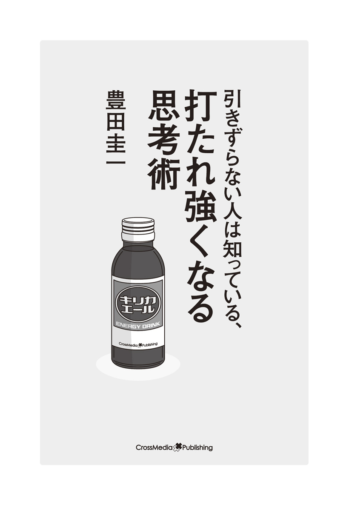

| 引きずらない人は知っている、打たれ強くなる思考術 | |
| 豊田圭一 | |
| 株式会社クロスメディア・パブリッシング (2014) | |

まえがき
仕事への期待や責任感からくるプレッシャー、ぎくしゃくした人間関係からくるストレスなど、仕事をしている人なら誰しもが経験することでしょう。
しかし、誰もが少なからず何らかのストレスを抱えながら生きているように思える一方、ほとんどストレスがあることを感じさせない、「打たれ強い」と言われる人がいます。
彼らはどういうタイプの人なのでしょうか？
なぜ、打たれ強くなったのでしょうか？
そこで、「打たれ強い」と言われる人はどういう人なのだろう？ ということを、様々な業種の第一線で活躍しているビジネスパーソンの方々にヒアリングしながら考えてみました。すると、大きく次の３つのタイプがあることがわかりました。
１つ目は「鈍感な人」です。
打たれ強いというよりも、打たれていることすら感じていない人と言えばいいでしょうか。こういう人の場合、先天的な性格があると思いますが、鈍いということは逆に人に対して気配りもできず、人とのコミュニケーションにも支障がありそうです。そして、こういう人は仕事でも評価はされないでしょう。
２つ目は「自信がある人」です。
自分に自信があるため、人から何を言われても動じないタイプです。誰からも認められる専門性を持っていたり、数多くの失敗や成功を経て精神的なタフさを身につけた人が当てはまります。このように、打たれ強いほどの自信をつけるためには、かなりの時間と経験が必要でしょう。つまり、普通の人がこのレベルに到達することはすぐには難しいかもしれません。
そして、３つ目は「切り替え上手な人」です。
このタイプの人は、凹むようなことがあっても長く引きずりません。前向きなことに、すぐに頭と気持ちを切り替えます。これは、心構えやノウハウを知るといったスキルで何とかなります。
さて、今でこそ「打たれ強いですね」とか「ストレスとかまったくないでしょう」と言われる私ですが、その台詞を聞く度に「いつから自分は打たれ強い人になったのだろうか？」と違和感を覚えます。なぜなら、私は子供の頃から気が小さく、人前で話すと顔が真っ赤になってしまい、そして、脚もガクガク震えてしまうほどでした。それに、今から考えると、そこまで大したストレスでもなかったはずなのに、社会人になってから２回、仕事中に神経性胃炎で倒れています。そんな私が元々精神的に強かったわけがありません。
でも、弱かったからこそ、意識を「切り替える」こと、そして少しずつ「自信を積み重ねる」ことで乗り切ってきました。今の私は他人に言われるまでもなく、ストレスをあまり感じませんし、ストレスがあるような出来事に直面したとしても、あっという間にそれが消えるか軽減していくように感じます。
今、私は自分自身のビジネスでの経験や切り替えのノウハウを活かして、主に国外の厳しい環境下で行うビジネストレーニングを提供しています。おかげさまで、グローバル人材の育成が急務とされる大企業や、海外で自分を磨きたいと考えているビジネスパーソンから、多くの受講の依頼を受けています。そして、実際に私の受講生たちはそのトレーニングを通じて、自信や精神的なタフさを身につけています。
本書では、私の今のビジネストレーナーとしての仕事や、25歳で大企業を退社し、会社を興して今日までのトライ＆エラーにより得た経験やノウハウをご紹介していきます。
あなたの意識が切り替わり、たとえ、多少凹むような出来事があったとしても、引きずることなく、乗り切っていけるきっかけになればと思っています。
Ｃｏｎｔｅｎｔｓ
01 失敗についての捉え方
02 仕事で凹むのは１時間まで
03 ストレス耐性は訓練で変える
04 想定内の１日を過ごせる人はいない
05 壁を壁とも思わなくなるまで
06 当たり前にあるものはない
07 必要なのは「シンパシー」よりも「エンパシー」
08 不遇のときに出会った〝鬼〟監督
09 ぐうの音も出ないクレームから学んだこと
10 「意識」「行動」「結果」を変える、簡単な方法
11 困難は分割せよ。仕事も分割せよ。
12 とにかくすぐやる
13 よく働く人ほどよく休む
14 考え事は夜にしない
15 言いにくいことをうまく言うには
16 人前であがらずに話すには
17 人と少しズラす
18 誰のための完璧主義か
19 自分を変える状況に身を置く
20 「ありがとう」と言える人、言われる人
21 立場が人を変える
22 すべてのトラブルには着地点がある
23 逃げ道を持っておくことは卑怯じゃない
24 ＴＯＥＩＣ９００でも英語ができないと言い張る日本人
25 「必然」と「欲望」が人を動かす
26 〝持たざる人〟の成功法
27 具体的に動けば、具体的な結果が出る
28 「バカ」という褒め言葉
29 人生に「関係ないこと」なんて１つも起きない
デキるビジネスパーソン100人に聞きました！
Ｐｏｉｎｔ01
失敗についての捉え方
あなたは失敗したら落ち込みますか？ 失敗してストレスを感じますか？
もちろん、失敗しても何も感じないとか、ましてや失敗することが好きだという人はあまりいないでしょう。そして、誰だって失敗したいと思って、何かをするわけではありません。でも、それを恐れていたら、何もできなくなってしまいます。
私はよく人から、「失敗してもあまり落ち込まないよね」と言われるほど、打たれ強い人間のように思われていますが、元々打たれ強い人間なわけではなく、ただ気持ちの切り替えに慣れているだけです。その方法とは、失敗することが「前提である」と前もって意識を切り替えておくことです。その都度、最善は尽くしつつも、結果的には失敗することを当然と思っておくのです。
と言っても、仕事を始めた頃から、すぐにそれができるようになったわけでもありません。失敗はするものだということをわからざるを得ないくらい、失敗をたくさんしてきたからだと思います。
ユニクロなどを展開するファーストリテイリング社長の柳井正さんは著書『一勝九敗』の中で「十回新しいことを始めれば九回は失敗する」とおっしゃっています。
私はこの話が好きで講演でもよく使わせていただきますが、柳井さんほどの優れたビジネスマンが10回のうち９回は失敗するのであれば、凡人である私は10回のうち何回失敗するでしょうか？ もしかしたら、私は１００回のうち99回は失敗するかもしれません。「失敗したらどうしよう？」と考えるよりも、そう意識を切り替えるとすごく楽になります。
失敗して、もちろん一瞬は「あー、失敗しちゃったか」「ダメだったか」と落ち込むかもしれません。でも、失敗することが前提なのだから、それはそれで受け入れた上で、今からどうしたらいいのだろう？ と考えることができるようになるのです。
また、失敗には、「あとで力になる失敗」と「ムダな失敗」との２種類があります。すべてが「ムダな失敗」なわけではありません。「あとで力になる失敗」は、それを反省して原因を分析し、改善点を洗い出すことで、逆にプラスに変えることができます。「今のうちに失敗しておいてよかった。あとでおおごとになる前に改善点が見つかった」と考えましょう。失敗するたびに凹む必要はないのです。
「最後に成功したら、すべての失敗はよい経験」と言います。だから、本当にやりたいことがあるなら、一度や二度の失敗で諦めないことです。
打たれ強くなる考え方01
失敗は成功で上書きすればいい
Ｃｈｅｃｋ！
□失敗をして落ち込まない人はいない
□失敗は前提であると受け入れて、早くリカバリーする
Ｐｏｉｎｔ02
仕事で凹むのは１時間まで
みなさんは仕事で凹んだとき、どうしていますか？
たとえば、みなさんの中には、営業職についている人も多いと思います。「営業の仕事が楽しくて楽しくてしょうがない！ 営業は自分の天職だと思う」と、毎日が充実している人もいるかもしれません。が、一方で「今日も新規開拓で外回りか......いやだなあ」と、つらく感じている人も多いと思います。また、アポ取りの電話をかけて、自己紹介しかけたところで「結構です」とガチャッと切られると、そのたびに心が折れる......なんていう話もよく聞きます。新規開拓ではなくお得意様回りの場合でも、取引先から厳しい要求をされてばかりでは、精神的に負担が大きいと思います。新卒で入社すると、まずは営業部に配属されることも多いので、その会社自体がいやになって転職を考えている、などという人もいるかもしれません。
しかし営業は、会社の業務の基本を学ぶ上で非常に重要な仕事です。自社の商品・サービスを自分なりに咀嚼し、いい面を項目立てて相手に説明する。相手から質問されることで、これまで見えなかった商品の魅力が見えてくることもあります。思いがけず自社の商品・サービスをほめられて、喜びを感じることもあるかもしれません。
また営業で契約を獲得すれば、それまでの道のりが長ければ長かっただけ、大きな達成感を味わうことができます。「この経験を生かして、また次につなげていこう！」というモチベーションにもつながります。
私の知り合いで、売上を上げている営業パーソンはたくさんいますが、「営業先でつらい言葉を浴びせられたときは、凹む」と言います。考えてみてください。冷たい態度を取られて喜ぶ人なんていませんよね。凹まないほうがおかしいのではないでしょうか。人との関係なしでは、営業だけでなくすべてにおいて仕事は成り立ちません。
そこでおすすめなのが、凹んだ気持ちをいつまでも引きずらないようにするために、「１時間ルール」を設定することです。１時間以内で気分を切り替えるのです。
実は、優れた営業パーソンたちは、みな「気持ちの切り替え」が上手です。くよくよする気持ちを引きずらず、リカバリーに行動を移したり、うまくいきそうな案件のことを考えたりしているといいます。
受注できないのは自分のせいだと思っていませんか？ まるで自分を否定されているかのように感じますよね。そうではなく、「うちの商品やサービスが、お客様に合わなかっただけだ」と考えてみてはどうでしょうか。
また、相手からぶっきらぼうにあしらわれたとき、「自分に何か落ち度があったからではないか......」といつまでも悩むのではなく、「この人はきっと誰に対してもこういう態度なんだろう。気にしていてもしょうがない」と割り切るのも大切です。「たまたま今日は機嫌が悪かったんだろうな」と考えてみるのもいいですね。
もちろん、自分が何か失敗してしまったために営業がうまくいかなかったという場合は、ちゃんと反省し、対策を立てねばなりません。しかし「相手の感じが悪かった」といったような小さなことで、いちいち気にしていたら、きりがありません。
どうしても自分を追い込んでしまうという人には、「もう１人の自分」になってみるのも１つの手です。緊張のあまり、どもりながら電話でアポ取りをしている自分。ミスをして取引先に呼び出され、クレームを受けている自分......。そんな自分を、冷静に客観視してみるのです。
いろいろと工夫してさまざまな交渉を経験していく中で、打たれ弱い人でも、強い心を持てるようになります。「こう言えば、『試してみるか』と言ってもらえるようになる」「こう切り返せば、きっと相手を怒らせてしまう」などと、相手の反応のパターンが見えてきます。これによってミスをなくし、凹むこともなくなってくるのです。
打たれ強くなる考え方02
営業がうまくいかなくても、
自分自身が否定されたわけではない
Ｃｈｅｃｋ！
□嫌な言葉を浴びせられて、凹まない人はいない
□割り切って気持ちを切り替え、次に移る
Ｐｏｉｎｔ03
ストレス耐性は
訓練で変える
みなさんのまわりでも、プレッシャーの中でより集中力を増すタイプと、プレッシャーに押しつぶされて、十分に実力を発揮できないタイプがいると思います。最新の遺伝子研究によると、両者ではある特定の遺伝子の働きぶりが異なることがわかったそうです。
では、ストレスに弱いタイプの人はいつまで経ってもストレスに対応できないかというとそんなこともなく、訓練を積むことでかなりのストレスに対処できるようになります。打ちのめされない程度に何度も負荷をかけ、ストレスに慣れさせれば、パフォーマンスはむしろ向上します。私の部下は、最初の頃こそちょっとお客様から何か言われるたびに凹んでいましたが、そのうち平然と対応するようになりました。また、「適度なストレスはパフォーマンスを向上させる」というように発想を転換することも有効です。
私はといえば、何度か神経性胃炎にもなったことがあるほど、ストレス耐性のなかったのが、今ではプレッシャーを楽しみながら仕事ができているのは、訓練を積んだからだと思います。あえて負荷をかけたわけではありませんが、結果的には何度も負荷はかかりました。今では笑い話にしていますが、独立してからの10年間は私にとって暗黒時代ともいえる10年間だったように思います。今、またあそこに戻れと言われたら絶対に嫌だと思うくらいです。
でも、その一方でその10年間があったからこそ今の自分があるともいえます。
売上をあげるために、顧客が何を求めているかを試行錯誤しながらチャレンジを繰り返し、社内の人間関係に悩みながらも何とかしなければと、社員と一生懸命話しました。また、クレーマーのようなお客さんと毎日戦った時期もありましたし、仕事で組んでいた相手から裏切られこともありました。起業したばかりの友達をサポートしようと、個人的にも少しお金を入れて手伝っていた会社がうまくいかなくなって、その彼に夜逃げをされたこともありました。
しかし、色々な体験をすればするほど、パターン認識ができるようになります。仕事の中で起こることはたいてい似通っているからです。だから、何か起こっても、「あー、これはあのときにもあったな」と、以前の経験が活きてきます。例えば、このお客さんはあのときのお客さんと同じようなタイプだなとか、同じようなことを言ってきてるんだな、など。そういう過程で、人は「打たれ強くなる」のだと思っています。
私はそもそも打たれ強い人間なんていないと思っています。様々な経験を経て、変わっていくものです。コーチングで有名なアンソニー・ロビンズの言葉に「あなたの過去は、あなたの未来と同じではない」というものがあります。今まで「ストレス耐性が低かった」「打たれ弱かった」からといって、これからも同じであると誰が決めるのでしょうか。
そもそも「打たれたくない」と思う人の方が多いと思うのですが（笑）、この先行き不透明なストレス社会においては無菌室の中にでもいない限り、ストレスを避けることは難しいでしょう。でも〝打たれ強くなる〟というのは、私がそうであるように実現可能なので、この本を通して、切り替えて打たれ強くなる考え方を身につけてほしいと思っています。
また大局的なところでは、人生は何が起こっても不思議はないというのが私の考えです。だって、離婚を前提に結婚する人はいないと思いますが、残念ながら毎年多くの夫婦が離婚をしています。あるいは、倒産を前提に起業する人はいないと思いますが、創業して10年もつ企業は10％いかないといわれています。つまり、90％以上の確率で「まさか、潰れるとは思わなかった」という事態が起きているということです。だとしたら、それは「まさか」じゃないですよね？
自分自身も、世の中も、諸行無常であり、永遠なるものはないのです。
打たれ強くなる考え方03
経験が人をストレスに強くする
Ｃｈｅｃｋ！
□現代はストレスを避けることが難しい時代
□失敗のパターンを把握すれば、何事も余裕を持って対応できる
Ｐｏｉｎｔ04
想定内の１日を
過ごせる人はいない
想定外の出来事が起こって、自分の気持ちのキャパシティを超えてしまったとき、人は精神的に非常に大きなストレスを感じます。ビジネスでは、「突然リストラを言い渡された」「信頼していた人に裏切られた」などというショックなことから、「絶対に取れると思っていた仕事を失注した」「電車が遅れてアポイントに遅刻した」など重要なことまで、想定外の出来事は身近にあふれています。
もちろん、それらをすべて許容することはできませんが、でも、ある程度許容できるようになるには、そもそも「想定外な出来事はよく起こるものだ」「想定外な出来事が起こることが想定内」と思っておくことではないでしょうか。
そもそも、「想定外」というとまったく予期していないような印象がありますが、自分自身を振り返っても、大抵の場合、自分には関係ないと思いたいという気持ちが、それらを「想定内」にさせないだけだったように思います。
私が学生時代に好んで回っていたバックパッカーの旅は、ツアーとは異なり、その日の宿も取らず、明日の行先も決まっていない自由気ままな旅です。想定外のこともよく起きます。例えば、ストで電車が動かないとか、声を掛けてきた優しそうな人から騙されたとか、夜中に間違った駅で降りてしまって野宿するはめになったとか......。
また、私が長年仕事として関わってきた「留学」でも、想定と現実がまったく違っていたということがよくありました。留学先の施設がパンフレットで見て想像していたよりもはるかにボロかったとか、ホームステイ先に行ってみたら、日本を発つ前に聞いていた家族とまったく違う家族だったとか......こちらもまたエピソードには事欠きません。
社会人になってからだって想定外な出来事ばかりでした。そもそもゼネコンの海外事業部で海外駐在のはずが、いきなり国内の建築現場に配属になるというスタートでした。独立してからも、絶対に取れると思っていた仕事を何度も失注しましたし、部下が辞めると言い出すのは、いつも突然のタイミングでした。
そんな「想定外」の出来事が起こるたびに私の胃はキューっと痛んだわけですが、今ではある程度受け流すことができます。なぜなら、想定外な出来事が起こることが想定内だからです。
考えてみたら、想定内の１日を過ごす人なんているのでしょうか。「朝いつもより早く起きられたから美味しいコーヒーが飲めた」「駅で偶然中学校の時の同級生に会った」「夕飯は家でコンビニ弁当だと思っていたら部長に飲みに誘われて美味しいご飯を御馳走してもらった」など日常は、よい意味でも想定外のことだらけです。
想定内の出来事ばかりこなしていたら人生は面白くなりません。もちろん、トラブルなどの悪い意味での想定外の出来事は嫌なものですが、それを解決したときの喜びや自分の成長を楽しむ余裕を持つといいかもしれません。
打たれ強くなる考え方04
想定内のことだけの人生は
面白くない
Ｃｈｅｃｋ！
□想定外なことは起こるもの、というスタンスで構える
□想定外のトラブルを想定内にする
Ｐｏｉｎｔ05
壁を壁とも思わなくなるまで
私がベトナムやカンボジアなどのアジア新興国で行っている海外研修の肝の１つは、日本とは異なる環境において、様々な課題が与えられて、それに取り組むことです。「自分がいかに日本という慣れた環境の中で、そして組織（企業）という守られた環境の中にいたか」ということに気づけるのです。
もちろん、どこに住んでいたって、誰にだって、日々の生活や仕事の中で不平も不満もあるでしょう。でも、発展途上の新興国に身を置くことによって、いかに日本は豊かで、自分がいろいろなものを与えられている環境にいるかに気づかされます。会社に勤めていれば、会社はあなたに「信用力」を与えてくれていて、それによって大きな額の取引が可能になったりします。また、指示系統があるので、部下は上司の言うことを聞きます。こうしたものは自分個人の力ではないのですが、そこを認識し続けることは難しいものです。
例えば、インドで行う海外研修の中で「あなたはリーダーとして、インド人の部下役と一緒にこの課題に取り組んでください」という課題が出たとします。しかし、インド人の部下役があなたの指示に従うかどうかはわかりません。彼らがあなたの指示に従うとしたら、それは彼らが「あなたの指示に従いたい」と思ったときだけです。あなたなら、そのような状況に置かれて、リーダーとしてどのように行動するでしょうか？
もちろん、私は受講生たちをいじめたいわけではありません。日本でも世界のどこでも、仕事で普通に起こりえる状況をつくっているだけです。だって、組織で成果を出そうと思ったら、部下が「このリーダーについていきたい！」「このリーダーのもとで働きたい！」と力を発揮しなければなりませんから。
ところが、終身雇用で年功序列的な要素の強い大企業では、部下は上司の言うことを聞くのが当たり前ですから、そのような会社で働いている方こそこのような状況の中で戸惑い、悩みます。自分はどうしたら他人を巻き込むことができるのだろう？ どうしたら人を動かすことができるのだろう？ と。リーダーの「個としての力」が問われるのです。
しかし、このような課題に取り組むことで、「日本」や「勤めている企業」という狭い社会の中で構築されてきた自分の価値観とはまったく異なる価値観があることに気づき、そして、自分を振り返るよい機会になります。
この研修をしていて面白いのは、慣れない環境の中で難しい課題を与えられて、打ちひしがれるのではなく、ほとんどの受講生が「最初はできないのではないかと不安でしたが、やってみたらできました！」となることです。与えられたゴールに向かってとにかく一生懸命取り組んで何とか成果を出すことで、「やればできる」ことに気づくのです。
彼らは本当はやればもっとできるはずなのに、チャレンジをしなくても何とかなる環境の中で、いつの間にか刀を研ぐことを忘れて錆びついてしまっているのかもしれません。だからこそ、終わった後、「私、まだまだやれますね！ この研修を通して、自分のポテンシャルに気づきました！」というセリフが出てくるのです。
そして、日本という慣れた環境、組織という守られた環境なら、もっとやればもっとできるんだ！ もっと成果をあげられるんだ！ というマインドに変わります。
でも、これは研修だから甘いと言えば甘いですよね。本当のビジネスはもっと厳しいもので、何度も何度も目の前に高い壁が現れます。しかし、この壁こそが人を成長させてくれるものでもあります。
私は起業してから、自分よりも優秀な部下たちをマネジメントすることにとても悩みました。部下からも何度も文句を言われたり、怒られたりしました。
正直、今でもまだまだダメなことばかりですが、でも、今の私は仲間や部下から何かを言われることが嫌ではありません。もちろん、その瞬間はちょっと凹むかもしれませんが、でも、それが自分の成長に繋がることを知っているからです。だからこそ、私にとって困難な状況は大歓迎です。私がいつも思っていることは、「ダメならダメで仕方がない。でも、とにかく最善を尽くそう！」ということです。私の個人としての能力には限界があるかもしれませんが、最善を尽くしていれば、もしかしたら誰かが助けてくれるかもしれません。そして、実際、私は何度も人に助けてもらってきました。でも、それは私自身が最善を尽くしていたからだとも思うのです。
といっても、私が最初からそういう人間だったわけではありません。私はできることなら楽をしたいですし、嫌なことからはなるべく逃げたいと思っています。でも、独立したあと、何とか自分の力で稼いでいかなければいけなかった中で、「最善を尽くさざるをえなかった」というのが本当のところだったと思います。
ところが、最善を尽くした結果、どんどん自分のできることが広がり、さらに人がついてきてくれるようになりました。だから、昔の自分が見たらビックリするかもしれませんが、今ではチャレンジが好きになりました。チャレンジすることが楽しくなりました。壁を壁とも思わなくなりました。
打たれ強くなる考え方05
壁こそが人を成長させる機会
Ｃｈｅｃｋ！
□組織という守られた環境に自分で気づく
□何事にも最善を尽くす
Ｐｏｉｎｔ06
当たり前にあるものはない
私の会社では今、グローバルな人材を育成するため、ベトナムなどのアジア新興国で、毎日出される課題に取り組む、という形式の企業研修を行っています。「ベトナムにある日本料理店でベトナム人向けのメニューを考案せよ！ 原価は売値の何割以下にすること」など、出される課題は日本で行うのも難しいものです。
そこでよく目にするのは、日本では当たり前と思っていたものが新興国や発展途上国ではないのが当然で、不便さのあまり、何１つ力を発揮できずに途方に暮れる受講者の姿です。海外研修ということで、もちろん企業側も優秀でやる気のある社員を送り込んでくるわけですが、ほとんどの人が初日で挫折します。言葉、交通手段、食事...すべてが日本の常識とは違います。まずは自分の中の常識を崩さない限り、課題をクリアすることもできません。１週間の研修の間、そのことに気付かずに日本の常識でしか考えられない人は何も成果を得られずに終わってしまいます。
しかし、中には初日でそのことに気付き、日本とはまったく違った環境である新興国でも、課題に対する解決策を見つけることができる人もいます。例えば、普段営業の仕事をしている方はお客様の要望に従って柔軟に対応することに慣れています。お客様がＡがよいというのに、「いや、絶対にＢです！」などと主張し続けたりはしません。だから、そういうことに慣れている人は、「日本とは勝手が違うんだな。ではどうしようか」とすぐに頭を切り替えられます。
課題を解決できる人というのは恵まれた日本の環境を当たり前だと思わず、今までの自分の常識を壊すことができる人です。あるのが前提でしかものを考えられない人は、その前提の中でしか戦うことができません。才能がある人は才能のありがたみに気付きにくいものです。元々お金持ちの人はお金があることが当たり前なので、お金がない環境に対応することができません。あるのが普通だったのですから、それは当たり前のことです。
私は幸か不幸か、社員全員が辞めてしまうという経験で、当たり前にあるものが明日はないかもしれないということを知りました。詳しくは後ほど述べますが、あることが当たり前と思うのではなく、あることをありがたいと思う気持ちが切り替わった瞬間に、不便や不満などのネガティブなマインドから解放され、その状況の中で何ができるかを考え始めるのではないでしょうか。
「親が亡くなって、はじめて親のありがたみを知る」とか、「失ってはじめて、失ったものの大きさを知る」と言いますが、人は早い段階で「今の状態」に感謝する気持ちを持ったほうがいいと思います。上昇志向は大切ですが、でも一方で、「今」に感謝する気持ちを持つと、ストレスが少なくすることができます。「当たり前だと思っていることを、当たり前ではないことだと思う」その意識を持つだけで、毎日の生活に感謝の気持ちが生まれ、発想も広がるのではないでしょうか。
打たれ強くなる考え方06
〝日常〟に感謝すると、
〝非日常〟に強くなる
Ｃｈｅｃｋ！
□今までの自分の常識を壊す
□あるのが前提でものを考えない
Ｐｏｉｎｔ07
必要なのは「シンパシー」
よりも「エンパシー」
以前、市議会議員選挙に出た友人の選挙活動を手伝ったことがあります。
ポスターを貼りに行ったり、街頭演説の場所取りをしたり、選挙カーを運転したりと、あらゆることをしましたが、その活動の１つに彼の選挙エリアに住んでいる有権者に電話を掛けて、「○月○日はぜひ選挙に行ってください」とお願いをするというものがありました。みんなで手分けをして何百件、何千件と電話帳の上から順番に電話をするローラー作戦です。
実はそのときに面白いなぁと思ったのが、私以外のみんなが電話を掛けることに疲れ果ててしまったことでした。もちろん、私だって疲れなかったと言えば嘘になりますが、みんなは肉体的に疲れたというよりも、精神的に耐えられなくなって疲弊してしまったという感じでした。
確かに私も電話を掛けると、何も言わずにガチャンと電話を切られたり、「迷惑だ！」と怒鳴られたり、「うちは◯◯党だから、掛けてくるな！」と言われるなど、ネガティブな反応をいただきました。もちろん、中にはそうではない人たちもいて、「おつかれさまです。ちゃんと行きますよ」とか「応援しているからね」という嬉しい反応だってありました。でも、それはあくまで少数。大半はそうではない反応でした。
そして、電話を掛けているみんなはそんなネガティブな反応に対して精神的に疲れ果ててしまったのです。だから、そんな状況の中で、１人で電話を掛け続けていた私に、あるスタッフが、「よく掛け続けられるね。疲れない？」と言いました。
でも、私はこう思ったのです。確かに、電話を掛けているこちらの立場で考えたら、「自分たちは選挙に行ってくださいとお願いしているだけで、まったく悪いことをしているわけではないのに、怒鳴られたり、怒られたりなんて耐えられない」となるかもしれません。それはそれで素直な気持ちです。
しかし、相手の立場に立ったらどうでしょう。仕事で疲れて、その日はまだ家で寝ていたところを、よく知りもしない○○後援事務所というところから突然電話が掛かってきて「○月○日はぜひ選挙に行ってください」なんて言われたとしたら、ついイラッとしませんか？ そして、ネガティブな反応をしてしまいませんか？
そういう相手の立場に立った意識を持てば、そもそも迷惑を掛けているのはこちらなんだから、相手がネガティブな反応をするのが当たり前と意識を切り替えることができます。だって、私たちのしていることは、ほとんどの方にとっては迷惑なことかもしれないのですから。
私が実施している海外研修でよくする話に「シンパシー」と「エンパシー」の違いがあります。どちらも「共感」と訳されるこの２つの単語ですが、この２つは微妙に異なります。どう違うかというと、「相手のことがわかる」という前提で考えるのがシンパシー、「相手のことはわからない」という前提で考えるのがエンパシーです。例えば、悲しい話を聞いて、「それは可哀想......」と共に泣きたくなるのがシンパシーです。一方、エンパシーは相手と同じように思うことはできないけど、その気持ちを理解することはできる。あるいは、理解しようとするもので、その上で彼らのニーズに応えようとするのがエンパシーだそうです。
なぜ、この話を出すかというと、日本とは異なる国では現地の人たちが日本人と同じように感じることはないからです。もちろん、日本人だって同じとは言えませんが、特に新興国においてはいろいろな場面で日本との考え方や感覚の違いを感じます。そんな新興国でビジネスをするときに、シンパシーで彼らを捉えようとすると、マーケットのニーズを見誤ったり、現地スタッフをマネジメントする際もうまくいかない可能性があります。なぜなら、現地の人たちは感覚が違うかもしれないのですから。ですから、まずは自分たちと同じように考えるのではなく、「相手（現地の人）のことはわからない」という前提に立った上で、物事を進めていく必要があるのです。
私たちが人間関係でトラブルを起こしたとき、「悪気なくやってしまった」とか、「良かれと思ってした」なんて言い訳をすることがありますが、相手がどう捉えるかなんてわからないのに、相手がどう思うかを考えることもしないで、自分だったら問題ないとか自分だったら嬉しいはずと思い込んでいるのです。結局、相手のことなんてこちらにはわからないのですから、ちょっと遠く離れたところから、客観的に眺めるということが大切なのかもしれません。
変に気持ちを入れすぎず、一歩離れたところから眺めてみる。これ、大切です。
打たれ強くなる考え方07
相手と自分の立場で考える
Ｃｈｅｃｋ！
□「相手のことはわからない」という前提で物事を進める
□相手に変に気持ちを入れすぎず、一歩離れたところから眺める
Ｐｏｉｎｔ08
不遇のときに出会った
〝鬼〟監督
20年以上前の話になりますが、私が大学を卒業して最初に入社したのはゼネコンでした。当時、ゼネコンを含む建設業界はバブル経済の恩恵を最も受けていた業界の一つでした。「これからは海外だ！ 宇宙都市だ！ 地下都市だ！」とかなり威勢がいいことを聞かされ、実際、海外事業部に配属されると、入社して数ヶ月後には海外駐在の辞令が出ていました。
正直に言うと、そこまで建設業という業種自体に興味があったわけではないのですが、とにかく早く海外勤務をしたかった私にとっては理想の会社でした。というのも、建設業界はドメスティックな産業なので、志望者の中に海外志向の人は少なく、面接で「いかに海外事業に関わりたいか！」を強く訴えれば、海外事業部に配属される可能性が高かったからです。そして念願叶って、海外事業部に配属が決まりました。ここまではすべてが予定通り、希望通りの結果でした。しかしながら、やはり世の中はそんなに甘くありませんでした。
私が就職活動を終えた直後にバブルは崩壊し、そのあおりで、私が入社した会社も本業回帰、国内回帰という流れになっていたのでした。一度は海外事業部に配属された私でしたが、入社と同時に国内の建設現場に出向することになったのです。入社数ヶ月後には海外駐在と華やかな状況を夢見ていた私の目論みは、もろくも崩れ、私は日本橋にある築何十年のボロい雑居ビルに入っている現場事務所に通うことになりました。
それまですべて思い通りにことが運んでいた私は、この想定外の出来事に気持ちがついていきませんでした。当時はまだ今よりも終身雇用の考え方が主流でしたし、私自身もずっとその会社で働こうと思っていたので、会社を辞めるだなんて考えは起こらず、ただただ、その状況に自分自身を適応させることができなかったという感じです。仕事にも気持ちが乗らず、ついつい出勤時間もギリギリになり、適当に仕事をこなし、勤務時間が終わった瞬間にさっさと帰るという日々が続きました。
そんな私を変えたのは、配属先の建築現場を統括していた、社内で有名な〝鬼〟の統括工事長でした。
ある日、私がいつものように始業時間ギリギリに出勤すると突然、「こらーーー、チンピラ、早くこっちに来い！」と大きな声で呼ばれたのです。それまでチンピラだなんて呼ばれたことがなかった私は、もちろん慌てて飛んでいきました。そして、鬼の統括工事長から「お前みたいなチンピラが、なに一番最後に来てるんだ？ あっ？」と全員の前で怒られ、私は直立不動のままで立っていることしかできませんでした。
そもそも新入社員なのだから、まわりは全員先輩です。しかし当時の私は、学生時代にしたバックパッカーの経験や、希望通りの会社や部署に入れたことで、自分の力や運を過信していました。この会社にはつまらない人しかいないのではないかとどこかでバカにして、指示をされても、いい加減な気持ちで仕事をしていました。そんな私にとって、工事長ははじめて「この人は舐めてはいけない」と思った人でした。
初めは怒鳴られないよう、怒られないようにと気を遣いながら仕事をしていました。しかし、怖いと言えばもちろん怖いのですが、その威厳のある態度とまわりの全員が彼に従うところがなんだかとてもカッコよく、なんとかこの人に認められたいと思って、こちらから積極的に話しかけ、色々なことを聞いているうちに、工事長は怖いだけではなく、本当に仕事ができ、そしてすごく面倒見のよい、まさに親分肌の人だとわかりました。例えば、私が仕事で頑張っていると「お前、新人の豊田だよな。頑張ってるな」と声を掛けてくれました。そして、彼は私に対してだけでなく、誰にでも同じように接していたのです。相手がどんなベテランであろうと、どんな肩書きがあろうと、褒めるときは褒め、怒るときは鬼のように怒鳴っていました。でも、それが気持ちいいくらいなので、みんなビシッと仕事をしつつも、誰もが彼を慕っていたのです。
実際は大した実力もないくせに、「自分はできるはず」「人からよく思われたい」というプライドがあった私は、自信がないことは一切やらないようにしていました。ところが、この工事長から自分が「チンピラ」なんだと気づかされて、そのプライドが少しずつ消えていったのです。
それからは、謙虚な気持ちを持つことで、工事長はもちろん、事務担当の方からも書類作成のコツを教わるなど、色々な人から学べる機会が増えていきました。すると、学べるだけではなく、今まであまり話さなかった人とも話す機会が増えて、人間関係も良好になり、仕事も楽しくなってきたのです。
40代になった今でも私は自分のことを「チンピラ」だと思っています。人は年を取ったり、経験を積んでいくと「自分はもういい年だから」とか、「そんなことをしたら、自分の築いてきたものを傷つける」など自分でブレーキをかけるようになり、新たなチャレンジができなくなります。そんなとき、私は「お前みたいなチンピラが」と言われたことを思い出すのです。
「そうだった。まだまだチンピラなんだから失敗するのが当たり前。失敗したって大したことない」そう思った瞬間に、自分で勝手に決めていた枠を取り払うことができるのです。
打たれ強くなる考え方08
初心忘るべからず、を忘れない
Ｃｈｅｃｋ！
□謙虚になれば、人は誰からも学べる
□人間関係の改善は、自ら積極的に動くこと
Ｐｏｉｎｔ09
ぐうの音も出ないクレーム
から学んだこと
自分が思い描いていたキャリアが積めない状況の中で、結局約３年も持たずに新卒で入った会社を辞めました。そんなとき、留学コンサルティングの会社を立ち上げようとしていた２人の先輩から声をかけられて、一緒に起業することになったのですが、起業以来、最大の問題が起こったのは、徐々にビジネスがまわり始めた５年目のときでした。
当時、私たちの会社は高校留学のサポートに力を入れており、日本の高校を休学してオーストラリアの高校に１年間留学するというプログラムに20人以上が申し込んでいました。ところが、開始時期の直前になって、現地の受入団体が倒産してしまったのです。数ヶ月後には留学するはずだったお客様の留学先がなくなった上に、すでに支払済みの20人分の費用は戻ってこない......ということを知ったときは愕然とし、「このことをお客様にはどう伝えればいいのだろうか？」「すべてこちらで責任をかぶらなければいけないのだろうか？」といくつもの思いが浮かんでは消え、ただただ胸がギューっと締め付けられる苦しさでした。
しかし、契約関係を確認すると、契約上は参加約款の免責事項に該当するため、会社には費用負担の義務がないことがわかりました。私は会社の代表として会社を守るため、すべてのお客様にこれらの事情を連絡しました。お客様にとっては一生に一度の留学ができなくなり、その費用もほとんど戻ってこないのに、私の会社はまったく痛まないという趣旨の、あまりにも一方的な連絡でした。もちろん道義的には心が痛みましたが、当時の私はとにかく、会社を倒産させたくない一心で「私たちには責任はない」の一点張りでいこうと決めたのです。
多くのお客様は「そうですか......。でも、仕方ないんですよね......」と不本意ながらも受け入れざるをえないという答え方をしてくれました。しかし、あるお客様は違いました。
今となってはそれがクレームではなく、当たり前の物言いだとわかっていますが、その方は非常に穏やかに、しかし断固たる口調で「豊田さん、今、あなたがやるべきことは、路頭に迷っているお客の留学先を探すことで、現地団体が潰れたからすみませんと口だけで謝って逃げることじゃないですよね？」と言うのです。しかし、新しい留学先を探すと言っても、それには時間も費用もかかります。財政的な余裕がなかった私はとにかく「○○さんがおっしゃることはよくわかります。しかし、今回の事態は私たちにも責任はなく......」と答え続けました。
そんな私に彼はこう言ったのです。「豊田さんはさっきから、何度も『おっしゃることはよくわかります』と言っているけど、その言葉はとにかく今をしのごうというだけの言葉で、あなたは何もわかってもいないし、わかろうともしていないですよね。逃げているだけですよ」と。そして、続けて「あなたは会社の経営者として、本当にこれでいいと思ってやっていますか？ 今はいったん電話を切るので、もう一度考えた上で連絡もらえますか？」とおっしゃったのです。
事実、彼と電話で話しながら、私は言い訳ばかり繰り返している自分が本当に嫌になっていました。人を不幸にさせるために会社をやっているわけではないはずなのに、自分を守ることだけを考えて言い訳している自分に怒りを感じ始めていました。
電話を切った後、代わりの留学先を探すという可能性について考え始めました。それまでは選択肢に入れていなかったのですが、銀行からの借り入れも使い切るということです。会社の存続に関わる判断なので、丸２日脳みそから汗が出るほど悩み抜き、覚悟を決めました。
私は親しい関係にあったオーストラリアのいくつかの州政府教育省に連絡をして、費用は私たちが支払うから緊急で留学生の受入先を確保してくれないかとお願いしました。
そして数週間の格闘の末、お客様の留学先をすべて確保したのです。留学ができなくなったことに意気消沈していたお客様からは本当に感謝されました。でも、こういう形で解決したことで、何よりも私自身がすごく「逃げなくて良かった」と爽やかな気持ちになりました。
銀行からの借り入れを全部使ってしまったけれども、別に私自身が死んだわけでも、会社が倒産したわけではありません。それよりも、あのとき逃げていたら、今でも大きな後悔として残っていただろうと思うのです。おそらく心の中で、私は「逃げている自分」に気づきつつも、それを見ないふりをして、早くその状況から解放されたいと思っていました。しかし、その一方で、「１人の責任ある人間として、逃げていいのだろうか？」と思っている自分もいたのです。
状況から逃げたい一心だった私は、ひたすらその場を凌ぐことだけを考えていました。しかし、逃げずにできる限りのことをやろうと頭を切り替えた瞬間から、様々なアイデアが出てきたと同時に、社員全員も協力してくれたのです。
あれから15年が経ちましたが、今でもそのときのことを鮮明に覚えているのは、「逃げない」自分に変われたきっかけがあの瞬間だったからだと思います。
もちろん、私はどんなことでも逃げないで立ち向かおう！ と思っているわけではありません。時には逃げることも大切です。しかし、逃げないでがむしゃらに立ち向かうほうがまわりも助けてくれますし、評価もしてくれます。「逃げない」と頭を切り替えることによって、生まれてくるものはたくさんあるのです。
打たれ強くなる考え方09
逃げない勇気が、
思考をポジティブに変える
Ｃｈｅｃｋ！
□クレームには真剣に向き合う
□言い訳する前に、ベストを尽くしたか問い直す
Ｐｏｉｎｔ10
「意識」「行動」「結果」を変える
簡単な方法
仕事には必ず期日（締切）があります。いつまでに仕上げなければいけないという期日です。期日がない仕事なんて、芸術家の作品くらいじゃないでしょうか。いや、芸術家だって、いついつの作品展に間に合わせなければならないとか、クライアントからいつまでにほしいと言われているかもしれません。
でも、期日があるから大変と言いたいのではなく、期日というゴールがあるからこそ、「そのゴールに向かってこうしていこう」と意識が変わり、そして行動が変わり、結果が変わるのです。
『デッドライン仕事術』や『残業ゼロの仕事力』などの著書があるトリンプ・インターナショナル・ジャパン元社長の吉越浩一郎さんは、残業ばかりだった職場から残業をなくして、19年連続で増収増益を達成したことで知られています。
彼は残業をなくしたにも関わらず、19年連続で増収増益を達成しました。その吉越さんいわく、残業してもいいとなるとダラダラと仕事をすることになりますが、〝絶対に〟残業してはいけないとなれば、残業しないためにはどうしたらいいか？ を考えて仕事をするようになるそうです。
日本人は労働生産性が低いと言われていますが、もしかしたら、「サービス残業」という習慣のせいで、「絶対にこの時間までに終わらせる！」という意識が欠けているのかもしれません。
だからこそ、私の行っている海外研修も期日を設けています。受講生たちは、はじめて訪れるアウェイの地で、朝いきなり課題が出され、それを午後３時とか４時までに終わらせてくださいと言われるのです。
例えば、「ベトナム人の企業選びの条件やどのような企業に魅力を感じるかなど、10代～50代まで年代別、男女別にトータル50人以上からヒアリングして、生の声をベースに分析・発表してください」という課題を出されて、２人１組で取り組みます。
はじめての土地だから、どこに行けばよいかもわかりません。もちろん、アンケート用紙なんてこちらで用意はしません。だから、ヒアリングする場所選び、ベトナム語でのアンケート作成まで自分たちでやってもらいます。しかも、時間はランチタイムを入れて６時間しかないのです。
あなただったらどうしますか？ できると思いますか？
でも、実際にほとんどの受講生たちはこれをクリアします。中には１００人にインタビューした人たちもいました。与えられた６時間の中で、アンケート分析まできっちりと仕上げた上で、です。でも、人はやればできるんですよね。私の研修に参加をする人たちは極めてふつうの人たちです。年齢は大学生から50代までと幅広く、ほとんどの方は海外経験が少なく、英語にも自信がない人たちばかりです。それでも、できるのです。
なぜなら、やらなければいけない状況の中で、期日というゴールを設けられたから。ゴールを達成するためにはどうすればよいかを考え、そこに向かって行動するから。だから皆、終わったあとに、「最初はできるかなぁと思ったけど、やってみたらできました」と言います。
そして、この課題を終えた後は、誰もが少なからず自信をつけます。やればできるんだ！ という自信です。そして、50人から１００人の現地の人たちとコミュニケーションを取ったことで、「結局、どこに行っても人は人。日本でもそうであるように、どこに行っても優しい人もいれば、そうでない人もいる。どこに行っても優秀な人もいれば、そうでない人もいる」ということにも気づくのです。
そんな受講生たちを見ながら、研修の主催者である私自身が「意識を変えるだけで、これだけ成果が変わるんだ」ということを目の当たりにして驚くほどです。
打たれ強くなる考え方10
デッドラインが
人の底力を引き出す
Ｃｈｅｃｋ！
□自分で自分に締切を設ける
□ゴールから逆算して考えるクセをつける
Ｐｏｉｎｔ11
困難は分割せよ。
仕事も分割せよ。
多くの人が同時並行で様々な仕事を抱えています。営業ならば契約を取ることだけ考えればいいというわけではなく、お客様への資料作りや会議の準備など、誰もが常に複数のやるべきことを抱えているのです。
しかし、やることがあまりに多くなってくると、精神的にも肉体的にも一杯いっぱいの状態になり、ストレスになります。毎日追い立てられているような感じ、経験したことがある人も多いのではないでしょうか。そういう状態になると、何も手につかなくなってしまうかもしれません。
そんなとき、私は、他のことは考えないで、とにかく目の前の仕事を片付けることに専念するようにしています。
空手に「１００人組み手」という修行があります。要するに１００人と戦うわけですが、どんな猛者であっても、１００人同時にかかってこられたらひとたまりもありません。１００人どころか５人や10人が同時にかかってくるだけでダメでしょう。でも、一対一であれば勝てます。だから、同時に１００人を相手にするのではなくて、とにかく目の前の敵を１人１人倒していくことに集中するのです。仕事を考えたとき、１００もの仕事を一度に抱えている人はそういません。せいぜい、３つか４つ、多くても10といったところではないでしょうか。
と言っても、目の前の仕事が楽なものとは限りません。留学コンサルティングの仕事では、留学先での予期せぬトラブルなど、こちらの手の届かないところで様々な問題が起こりクレームになるということがよくありました。小さなものから大きなものまで毎日追われるクレーム対応は、胃が痛くなる仕事でした。
もちろん、私は他にも仕事を抱えていました。それも１つや２つではありません。しかし、クレーム対応をしながら別の仕事がこなせるほど、私にはキャパシティがありませんし、クレーム相手と胃が痛くなるような話をしたあとで、すぐに気持ちを切り替えて新しいキャンペーンについて楽しく話せるほど、器用ではありませんでした。
そのとき、私はストレスの原因にもなっている「クレーム対応」という仕事だけに集中して、その解決に努めたのです。あれもこれもと仕事をしながらクレームに対応していても、時間がかかるだけですし、精神的にも良くありませんから、とにかくそこに集中しようと意識を切り替えたのです。
ただ、人によっては、様々なことをすることでバランスがとれる人もいます。１つのことに煮詰まってしまったとき、一旦そのことを考えるのをやめて、他のことに切り替えられると案外いいアイディアが浮かんだりするのです。一番よくないのは、あれもこれもと考えすぎて何もできない状態です。考えすぎてうまくいかない人は、まずは今の目の前の仕事に集中するといいと思います。
打たれ強くなる考え方11
とにかく、目の前の仕事を片付ける
Ｃｈｅｃｋ！
□山積みの仕事は、小さい単位に切り分ける
□１つのことに煮詰まったら、他のことで頭を切り替える
Ｐｏｉｎｔ12
とにかくすぐやる
仕事でお客様に新しい提案をするときは、提案書をつくる前に提案内容を考えて組み立てる必要があります。お客様が望んでいること、それに対してこちらができることなどを考えて、提案書に落とし込むのですが、「提案内容を考えて組み立てる」という作業は、頭で考えているだけでは一歩も前に進みません。そして、いつまでも「うーん、どうしようか」と唸り続けて時間ばかりが過ぎてしまうことがあります。
私の仕事仲間で、この作業を進めるのがとても得意な人がいます。
彼は打ち合わせが始まると、「ちょっと書いてみますね」とすぐに立ち上がり、ホワイトボードの前で何やら書き始めます。まずは、お客様が望んでいることや条件など、何も考えずに書けることをすべて書き出します。しかも、それをわかりやすいように矢印や線などを使って、グループ分けしたり、時系列に並べたりしながら。そして、そのあとで、自分たちは何ができるかを「こういうこともできますよね？」「これもいいかもしれませんよね？」とどんどん書いていくのです。
そのホワイトボードを見ているうちに頭が整理されてきて、何が足りないのか？ どこを考えるべきなのか？ を考えられるようになり、徐々にアイデアが出てくるのです。彼は座っている人たちの意見をさらにホワイトボードに書き出します。そして、１時間もしないうちに提案内容の骨子が完成！ というわけです。
私のまわりにはこの作業が得意な人たちが何人もいて、私はいつも彼らと仕事をしながら心地よさを感じています。なぜなら、１人で悶々と悩む必要がなくなり、仕事がさっさと終わると同時に、３人集まれば文殊の知恵のように、１人で考えるよりもはるかにいい提案内容に仕上がるからです。
でも、彼らが特殊能力を持っているわけではありません。ホワイトボードに書き出している彼らだって、書きながら頭を整理しているのです。彼らだって書き出さないと頭が整理できませんので、「まずは書き出してみよう！」とやってみるのです。
これは書籍の原稿を書く作業も同じかもしれません。１冊の本を一気に書こうと思うと「何を書いたらいいんだろうか？」「何から書き始めればいいんだろうか？」と気が遠くなります。何時間経っても１行も書き始めることができないかもしれません。
でも、まずはこういうことを書きたいという項目を、内容が重なってもいいから一気に書き出してみるのです。そして、そのあとでそれらの中から似たようなグループに分け、同じような項目を整理していきます。ある程度項目が完成したら、あとはその１つ１つを書くだけです。と言っても、その項目すらなかなか書き始めることができないときもありますが、私は何でもいいから思いついたことをとにかく書き始めて、あとでそれを削除したりまとめたりしていくようにしています。
とにかくまずは何かやってみるのです。何かやり始めるとようやく頭が回転を始めます。逆に言えば、何かを始めてみないと頭が回転を始めないので、いつまで経っても先に進まないような気がします。
例えば、レストランに入って、いつまでもメニューを眺めながら「どれにしようか？」となかなかメニューが決められない人がいます。私もそういうタイプだったのですが、あるときにさっさと店員を呼んでしまうことにしました。そうすると、店員に頼まなければいけないというプレッシャーから頭が回転します。しかも、それでも考えられないときは、店員に聞いてしまえばいいんだ！ と思い立ち、「オススメは何ですか？」と聞くことにしました。
これはかなりよいアイデアで、さっさとメニューも決められますし、美味しいオススメもわかるし一石二鳥だと感じて、それ以来、店員はさっさと呼ぶようにしています。つまり、考えてから行動ではなく、考える前に行動をし始めることによって、より考えることもできるようになるのです。
メニューを決めるだけでなく、仕事も同じです。私は締め切りがないとどうもだらけてしまってその仕事にまったく手がつきません。頭が働かないのです。ところが、「これは来週末までにお願いします」など、締め切りを決められたとたんにちょっとしたプレッシャーを感じ、「さっさと仕事を終わらさないと来週末になって焦ったら、精神的にも辛いな」と思い、すぐに取りかかったほうが楽だと判断して、そこから頭が急速に動き始めるのです。
打たれ強くなる考え方12
何かをし始めることで、
やる気を出す
Ｃｈｅｃｋ！
□作業をしながら頭を整理する
□プレッシャーを仕事の原動力に変える
Ｐｏｉｎｔ13
よく働く人ほどよく休む
私は仕事柄、日本と海外を行き来していますし、時間もかなり不規則な生活をしています。だから、「カラダは大丈夫？」とか「体調には気をつけて」と心配されることがありますが、実はそれなりにちゃんと休んでいます。日本にいるときは基本的に土日は休みに当てるようにして、どんなに面白いイベントがあってもほぼ参加はしませんし、海外に行ったときも、お腹を壊しそうなものは食べないようにし、また水にはかなり気を遣います。そして、なるべく睡眠時間を取って疲れないように心がけています。海外研修を受講する方の中には、海外にやってきたことでテンションが上がって、慣れない環境なのについつい日本にいるときよりも頑張ってしまう人がいます。でも、そうすると何日か経って疲れが溜まり、突然熱を出したりしてしまうのです。あるいは、ふだんとは違う環境の中で、ちょっとしたことでダウンしてしまったり、現地の食事が合わなくてお腹を壊したりする人もいます。
だから、私は少しでも疲れたなと思ったら、昼寝をするなり、早めに寝るようにして、体調が悪くならないように意識しています。私の友人に、海外では総合ビタミン剤を多めにとるようにするという人もいます。彼いわく、慣れない環境では疲れが溜まって免疫力が落ちるので、サプリメントを飲むんだとか。彼の話を聞いたときに、皆それぞれ工夫をしているんだなと思ったものです。
「元気があれば何でもできる！」と、プロレスラーのアントニオ猪木さんがおっしゃっていましたが、確かに体調を壊したら何もできませんし、体調が悪くなると心まで弱くなってしまいます。元気だからこそ、何でもできるというのはそのとおりです。だから、何をするにもとにかく健康が第一だと考えています。健康であればいざというときに無茶もできるかもしれませんが、いざというときに本来の力が出せないのでは元も子もありませんから。
私は、生まれて20日で肺気腫になり、肺の一部を摘出するという手術を受けました。その後も身体が弱く、母は常に私の健康に気を遣っていました。そもそも母がヨガの先生になったのも、私の身体が弱かったということが理由としてあげられます。大きくなって健康体にはなりましたが、それでも幼少時のその記憶から、私は決して自分の健康に自信はありませんし、もともと身体が強くないという意識を持つようにしています。
だから、何か特別な健康法を行っているわけではありませんが、無茶はしないようにしていますし、疲れたら早めに休むことを心がけているのです。でも、そのおかげでほとんど風邪を引くことはありません。
私の知っている仕事ができる人たちの共通点は健康だということです。皆それぞれ自分なりに健康に気を遣い、フィットネスクラブに行ってトレーニングマシンで鍛えたり泳いだり、あるいは定期的に断食をしたりしています。経営者仲間でトライアスロンやマラソンをやっている人が多いのも、もともとは健康のためということがあったのかもしれませんが、それを仲間と楽しくやることで、趣味と実益を兼ねているのかもしれません。
また、心の健康という意味では、ストレスを溜めないようにすることも大切です。「病は気から」と言われるように、心が病んでしまうと身体にも響きます。現在はストレス社会ですから、ストレスが完全になくなることはないでしょうけれど、ストレスの元を早く発見し、それを解消するように心がけることで、心の病を防ぎ、結果的にはそれが身体の病を防ぐことにもなると思っています。
打たれ強くなる考え方13
健康が良い仕事を生む
Ｃｈｅｃｋ！
□疲れたら早めに休む
□ストレスはすぐに解消する
Ｐｏｉｎｔ14
考えごとは夜にしない
夜型人間でどちらかというと朝が弱い私ですが、仕事の仕方としては「面倒な仕事」や「嫌な仕事」は朝のうちに一気に片付けてしまうことを心がけています。
例えば、なるべく夜はメールをチェックしないようにして、仕事が終わってから明け方までに溜まったメールは、朝一の時間を活用して一気に返信しています。メールの返信が「面倒な仕事」や「嫌な仕事」ということではありませんが、中には頭をフル回転させないと返せないメールや、返信に時間がかかるメールもあります。それを夜にチェックしてしまうと、ついつい返信しようと思うあまりに寝る時間が少なくなって翌朝に支障をきたしたり、考え過ぎて眠れないなんてこともあるかもしれません。相手はこんな夜中に返信を期待しているわけではないので、そこは割り切って、夜は夜でちゃんと寝ることに専念したいからです。
なぜ、朝一にまとめて一気に返すか？ ですが、他の仕事を始める前に集中して一気に返さないと、他の仕事は他の仕事で忙しいので、そちらに取りかかったらメールもまた返せなくなってしまうからです。メールを全部返せないままに他の仕事をすると、仕事をしながらもメールの内容が気になってしまうかもしれませんし、メールの相手からも「まだ返信がない」と思われるかもしれません。だから、溜まっているメールはさっさと朝のうちに片付けてしまい、そのあとすっきりと気持ちよく仕事をするようにしています。
脳科学の観点でも、夜寝ている間に脳が情報処理をして、昼間に得た情報を記憶として定着させるため、朝は頭の中がスッキリして効率が上がるそうです。実際に朝のほうが返信の内容を速く考えることができます。
とは言っても、寝ようと思ってもなかなか寝つけなそうなときだってありました。ストレスが溜まる仕事の毎日で夜になっても頭が冴えてなかなか寝付けず、睡眠不足になっていたとき、このままでは精神的にも肉体的にも良くないなぁと思って、外に走りに行ってカラダを疲れさせてから寝たこともありました。
仕事のやり方としては、午前中のうちに頭を使う仕事をして、午後は人と打ち合わせをしたり、作業系の仕事をしたりするようにしています。そして、なるべくランチは外で人と会いながら取るようにします。オフィスの外に出るだけでも、また人と話しながらランチをするだけでも、頭をリフレッシュできるからです。
だから、私は朝の仕事でちょっと行き詰まったときなどは、「頭を切り替えよう！」と、会社の仲間などを誘ってランチに行き、そこで悩んでいることを話します。そうすると、自分では思いつかないようなアイデアが仲間から出てきたり、あるいは仕事によっては私が手伝いましょうか？ みたいなことも出てきて、精神的にも楽になることがよくあります。
パワーブレックファストやパワーランチなど、朝早くやランチタイムの時間を活用して社外の人たちと会って交流したり、勉強をしたりという方がいますが、こういう活動もまたよい刺激になります。刺激を得られるだけではなく、新しいアイデアを得ることができたり、あるいは社外の人脈も広がって、何かあったときには相談できる相手が得られるかもしれません。
私たちは限られた時間の中で仕事をしています。そして、それなりに睡眠時間を取りたいですし、頭も心も休ませたいです。心身をいい状態に保った中で仕事の効率を上げるには、私みたいに朝を有効活用するのも１つの手ですし、事務作業はどのタイミングにしたらはかどるか、自分の勝ちパターンを把握しておくとよいでしょう。
打たれ強くなる考え方14
仕事がはかどる
「勝ちパターン」を把握する
Ｃｈｅｃｋ！
□「面倒な仕事」「嫌な仕事」は、朝、一気に片付ける
□仕事に煮詰まったら、外に出る、人と話す
Ｐｏｉｎｔ15
言いにくいことを
うまく言うには
上司に言いにくいことを伝えなければならない。長年の取引先に取引停止を伝えなければならない。お客様に悪い結果を伝えなければならない。社員にリストラを通告しなければならない......人と関わって仕事をしている以上、誰かに対して言いにくいことを言わなければいけないことはあると思います。
私は長年留学サポートの仕事をしていたので、何度かあった出来事としては、お客様（留学生）が現地でトラブルを起こして、学校を退学になり、国外退去になったことを両親に伝えなければいけないことがありました。しかも、私に連絡がくるのも「明日、国外退去になります」というタイミングだったりするので、両親にはすぐに連絡をしなければなりません。
何とか留学費用を捻出して１年間とか数年間の留学に行かせる親に対して、どんな理由であれ、「退学になりましたので、明日日本に帰ります」だなんて、何も感情を込めずにさらっと伝えるなんてことはできません。しかも、その退学理由だって、本人の言い分があるでしょう。しかし、どんな言い分があろうとも、親がどんなクレームをつけてこようとも、退学は退学、明日の国外退去が覆るわけではありません。だから、これを伝えるのは嫌な仕事でした。
最初は、どうやってうまく言おうかと考えました。どうしたら、こちらに非がないことをわかってもらいながら、この事態を受け入れてもらえるだろうかと考えました。しかし、そう思いながら伝えようと思っても、こちらも何となく後ろめたい思いが出てしまい、親からはガンガン突っ込まれます。
「おたくにお金を払ってお願いしたんだから、おたくが何とかしてください！」と、何度怒鳴られたかわかりません。でも、何とかしたいのはやまやまですが、何もできないのです。
様々なケースがありましたが、思い出に残っているエピソードの１つに、１年間アメリカに留学している女子高生が過食症になって、それが原因で留学の途中で退学・国外退去させられたことがあります。
ホームステイ先で夜中に冷蔵庫を漁って食べ散らかし、そして、そのあとトイレで吐くという行為が毎晩のように続いたことが原因だったのですが、過食症がどういうものかをわからない日本の親は、「だったら冷蔵庫に何も入れておかなければいい！」とか「食べて吐くということくらいで退学なんて厳し過ぎます！ 娘には食べないように言いますから！」と言うのです。
しかし、過食症は精神病で、最悪は死に至る病気です。そして、その責任は受入先の学校もホームステイ先も取ることはできません。だから、退学は当然の措置です。
ところが、困ったことに、ストレスになっていた「留学」から解放されたことで、帰国してから精神科医にかかった彼女からはまったくその症状が見られず、お医者さんまでが「過食症ではなかったんじゃないですか？」という始末。親からは「過食症を勝手にでっち上げられて、途中で留学を中止された！ 今までかかった費用をすべて返金しろ！」と言われ、私たちは踏んだり蹴ったりです。
結局、私は両親と直接話すために会いに行きました。うまく言おうなんてまったく考えず、私が知る限りのすべての事情を話すと同時に、他の留学生の同じような事例なども話し、「残念に思うのは私も一緒ですが、私自身、お嬢様にとってはこれが現時点ではベストな方法だと思っています」と伝えました。私だって、「お客様によい留学をしてもらいたい。留学でよい経験をしてもらいたい」と思っているのは同じだからです。
そして、真剣に話す私に対して、両親は一切声を荒げることはありませんでした。言いにくいことをうまく言おうと思ったら、うまく言おうとしないのが一番ではないでしょうか。
打たれ強くなる考え方15
言いにくいことほど
真剣に誠実に伝える
Ｃｈｅｃｋ！
□相手と直接話す
□言いにくいことをうまく言おうとしない
Ｐｏｉｎｔ16
人前であがらずに話すには
私が「以前は人前で話せなかった」なんて言うと、「嘘でしょ？」と言われますが、30代半ばを過ぎても私は人前で話すことが大の苦手でした。人前に出た瞬間に頭の中は真っ白、顔は真っ赤、そして、脚も震えてしまうくらいだったのです。原因は「過剰な自意識」だと自分でもわかっていました。
私は人一倍自意識過剰で、とにかく人には格好悪い姿は見せたくないと思っていました。だから、人前に立つと、必要以上に人の目を気にして緊張してしまうのです。頭では理解していても、あがり症だけは治らないと思い込んでいました。
しかし、今から７年前、１冊目の本を出版したすぐ後に、知り合いから講演１依頼されたのです。「本の内容を私の会社の社員向けに講演してください。豊田君、話すの得意でしょ？」と......。「いいえ、得意じゃありません」と言うのは悔しいので、「やります！」と安請け合いしてしまいました。
受けてしまったのだから仕方がありません。人前で話せないのはマズイとの思いから、「話し方教室」に申し込みました。
そして、話し方教室の初日。早速、先生が観客となり、じーっとこちらを見ている前で、壇上で話をすることになりました。たった１人の観客の前でさえ、呼吸ができないほど息があがり、本当に緊張をしたのを覚えています。
そんな私に、先生は、「人前で平然と話しているように見える大企業の社長だって芸能人だって、みんな緊張するものですよ」と言い、気持ちを切り替えるための「方法」を教えてくれました。その方法とは、「講演する演台の前までゆっくり歩くこと」、そして次に、「腕時計を外して演台の上に置くこと」、そのあと「ゆっくり観客を見渡して、ひと呼吸置いてから挨拶をすること」という３つの手順でした。
緊張のあまり、ワーッと一気に話し始めることで呼吸ができなくなり、そのせいで余計に酸素が足りなくなり、さらに緊張が増すという悪循環を解消するには、とにかく〝ゆっくり〟行動しろというアドバイスだったのです。そして、みんなが見ている前で時計を外すという動作をすることで、大勢に見られながら立っている状況に徐々に慣れ、話し始めてからもゆっくり話すことに意識を集中させることで、緊張を減らすということでした。
最初は疑心暗鬼でしたが、少なくとも先生の前では話すことができました。４回のレッスンを終えた私は、本番でもほとんど緊張することなく講演を終えました。
あれから多くの講演の機会をいただき、今では時計を外さなくても話ができるようになりました。小さい頃からあがり症だった私を知っている母は「あんなに苦手だったのに信じられない」と今でも感慨深げに言いますが、それは私自身が思うところでもあります。これだけは一生治らないと思っていたのに、むしろ今では積極的に人前で話したいくらいなのですから。
人は案外ちょっとしたきっかけで変わることができ、あとは経験して場数を踏むだけという状態になります。「やってみたらできた！」これを感じられることが、あなたの中にもあるはずです。
打たれ強くなる考え方16
苦手の〝殻〟は外せる
Ｃｈｅｃｋ！
□緊張しない人はいない
□緊張しているときほど〝ゆっくり〟動く
Ｐｏｉｎｔ17
人と少しズラす
人はついつい他人と自分を比較してしまいます。比較をして、他人を羨んだり、自分の状況を嘆いたりすることもあるかもしれません。「私のほうが優秀なはずなのに、彼女はコネがあるから一流企業から内定をもらえた」とか、「自分のほうが成績が良かったのに、彼は合格して、自分は不合格だった」とか、こんな話はいくらでもあるでしょう。
しかし、誰も人生が平等だなんて言っていません。人は１人１人全員違うものです。
それなのに、なぜ多くの人が安定志向になり、常に何をするのが正解かを知りたがり、そして、みんなと同じことをやるのか？ 私にはよくわかりません。安定志向がそうさせるのかもしれませんが、「みんなと同じことをやる」ことは、決して安定への道ではなく、むしろ不安定への道だと思うのですが、いかがでしょうか？
例えば、不景気が長く続くと、資格で守られた職業に人気が集まり、弁護士や会計士の資格を取得する人が増えます。しかし、同じことを考える人はたくさんいて、競争が激しくなります。紛争事件が急増したり、会計士を必要とする会社が急増しない限りは、限られたパイを多くの人で分け合う状態に陥るからです。
もちろん、自分が集団の中で優秀で、上から10％とか20％に入れる自信があるのであれば、みんなと同じことをやってもよいと思います。そうではなくて、人と同じであれば安心、という発想では、競争に巻き込まれてしまいます。今、弁護士や会計士で食べていけない人たちが多くいるというニュースを耳にしますが、もしかしたら、安定志向がその原因の１つかもしれません。
そもそも、人と違うって何をやればいいんだろう？ と誰もが思うでしょう。決して私はとてつもなくユニークなことをやらなければダメだと言いたいわけではありません。ちょっと違うだけでいいのです。そもそも人は１人１人違うのだから、自分の強みややりたいことを活かして、ちょっと人と違ったことをやる。それだけで価値が上がります。
例えば、日本人にとっての外国語といえばまずは英語が挙がります。実際、「英語力の高い人材」を求めている企業は多いです。しかし、もし英語力がゼロの状態から勉強を始めたとしても１年後に英語力を「武器」と言えるレベルにまで高めるのは難しいでしょう。
ここで、仮にその人が北欧の家具が大好きで、実際に現地に旅行に行って、さらに魅力に取り付かれているとします。この場合、一般的に英語を身につけると就職や転職に有利だからという理由で英語を１年間学ぶよりも、１年かけてスウェーデン語を学んだほうが、「好き」という気持ちがあるぶん上達も速いですし、スウェーデン語を使える人材は英語を使える人材よりも圧倒的に少ないので、市場価値が上がります。語学レベルが完璧ではなくても、スウェーデン関連の事業をしている企業にとっては、是非ほしい存在となる可能性もあります。
大切なのは、あなたが人と違うところはどこかということです。就職面接でも「自己ＰＲをしてください」とよく聞かれると思いますが、それは「人と違うあなたの強みは何ですか？」という趣旨の質問です。
また、人と同じように考えて行動している人は自分で考えて行動するクセがついていないので、想定外な事態になかなか対応できません。想定外な事態に、「みんな、普通はどう対応しているんですか？」なんて尋ねても答えはないのです。
想定外な出来事、不安な出来事に対応するためには、いつもちょっとでいいから、人と違うように考え、人と違うように行動するように意識を切り替えることです。人と違うことが価値であり、価値があるから結果的にはそれが安定につながったり、自信を与えてくれたりするものなのです。
打たれ強くなる考え方17
人と違うことは価値となり、
自分に自信を与えてくれる。
Ｃｈｅｃｋ！
□安定と思っていたことが、実は不安定な場合は多い
□自分の強みや特性に目を向ける
Ｐｏｉｎｔ18
誰のための完璧主義か
私の得意技は「脱完璧主義」です。「脱完璧主義」だなんて、あまり大きな声で自慢できることではありませんが、でも、だからこそ何とかやってこられたのではないかとも思っています。
新入社員の頃、課長からある仕事を言い渡されました。期限は１週間です。仕事の説明を受けても、何をどうしたらよいのかがまったくわからなかったので、隣に座っていたとても優秀な同期に「これ、どうやってやればいいの？」と聞いてみました。彼は「私もわかりませんが、たぶんこうじゃないかと思います。やってみます」と言うのです。やり方を教えてもらおうと思ったのに、彼には頼れそうもありません。参ったなぁと思った私は自分の力ではできないので、ここは課長に力を借りようと頭を切り替えました。
もちろん、本当は自分の力でできるならやりたいと思ったのですが、仕事の内容自体ほとんど理解ができなかった時点でこれは無理だと思いましたし、すぐにストレスを感じたので、なんとかこのストレスを減らすにはどうしたらいいか？ いかに楽にこの仕事を終えるにはどうしたらいいか？ と考えました。ダラダラと自分の力だけでやってもなかなか成果は出ないだろうし、本当に疲れてしまいそうだと思ったからです。
私はとりあえずできるところまでやって、数日後に課長のところに持って行きました。わからないという私に、課長は「ここはこうだろ。ここはこうしたらいい」とアドバイスをくれました。そして、そのアドバイスを元にやったのですが、まだわからないところばかりだった私は、ある程度のところまでやって、また次の日に課長に聞きに行ったのです。さすがにそのときは「豊田、早いのはいいが、もう少し自分で考えろ」と言われました。が、それでもアドバイスをくれました。そんなことを何度か繰り返しながら、期日までに仕上げることができたのです。
一方、隣の同期はまったく課長に聞きに行ったりしません。もちろん、優秀だから行く必要はなかったのかもしれませんが、最終的にどちらの成果が高かったか、それは読者のみなさまも予想がつくでしょう。同期はなんとか自分なりに頑張って納期に間に合わせましたが、どれだけ頑張ってもそれはあくまで新入社員にとってそこそこのレベルです。
そのとき以来、「脱完璧主義」を実践するようになりました。自分１人でやり抜きたい、というスタイルの人ももちろんいると思いますが、「自分１人では完璧にはできない」と切り替えて、人の助けを求めるやり方には大きなメリットがあります。仕事は顧客満足が重要で、顧客満足のない自己満足ではいけません。自分１人の力でできなかろうが、試行錯誤をしようが、最終的に顧客が求める成果を出せればいいのです。だから、完璧主義で最初から完璧を目指すがゆえに変に頭でっかちになってしまい、結果的には顧客満足につながらないということは避けたいものです。当の本人にとっても、なかなか成果を出せない状態をストレスに感じ、かつ結果も伴わないというのではあんまりです。
そもそも自分が考えている「完璧」が顧客の考える「完璧」とは異なる可能性もあります。両者が異なるとき、自分が考えている「完璧」は「思い込み」になっています。「思い込み」で仕事をしてしまうと、間違った方向に進んでしまい、それまでしてきたすべてのことがムダになってしまうこともしばしばあります。
つまり脱完璧主義とは、最初からゴールである「完璧」を決めずに、試行錯誤をしながら最終的に相手が求める「完璧」に近づけていくということではないかと思うのです。
脱完璧主義のよいところ。それはいつでも柔軟に修正ができることです。常に進化することができ、進化することに躊躇がありません。でも、これって今の時代に合っているように思いませんか？ 例えば、ウェブアプリやウェブサービスなどは、まずはバージョン１・０を出してみて、顧客からのフィードバックをいただきながら、修正をしてバージョン２・０を出し、３・０を出し、というように、顧客を巻き込みながら、最終的には顧客満足に近づけていきます。そして、完成形はなく、常に進化をし続けます。
私が今、最も力を入れているビジネスの１つはインドでの事業です。いくら日本で長年ビジネスを経験しているからといって、インドのビジネス事情はまったく異なります。何もかもが新しい経験で、戸惑いの連続です。例えば、明日何時に会うと約束してもその時間に来ない人がいます。少し遅れるならまだしも、何時間待っても来ないことだってざらです。あるいは、できますと言っていたことが、いざやってもらおうと思ったらできません。だから、例えば、私の知っている会社は工場建設の工期が４ヶ月遅れましたし、私の友人の飲食店は開店予定から１年も経ってようやく開店しました。
あらゆることが日本での常識と異なり、なかなか思い通りにいかないのがインドビジネスです。でも、そういうものだと思えば、それを前提に考えるしかありませんし、だからこそ、こちらも見切り発車でもどんどん進めていって、やりながら修正するというやり方がインドではいいと思っています。それこそ得意の脱完璧主義です。
そもそもインドの事業は日本人の私だけではできませんし、それに最初から完璧を目指しても思い通りになんていかないという前提に立ち、つまりそのように頭を切り替え、インド人のパートナーにいろいろ聞きながら進めています。もちろん、彼の言っていることがすべて正しいかどうかだってわかりません。そのあたりは信頼しつつも、自分なりに判断をしながら進めますが、試行錯誤が前提なので、何かあれば修正しながらいこうという、どこか気楽な気持ちを持ちながら進めることができるのです。
打たれ強くなる考え方18
相手が求めていることを聞き、
完成形に近づけていく
Ｃｈｅｃｋ！
□思い込みで仕事をやると、ムダになることが多い
□目指すのは自分の満足ではなく、顧客満足
Ｐｏｉｎｔ19
自分を変える状況に身を置く
人事を尽くして天命を待つ――最善を尽くして、できる限りのことをしたら、最後はどんな結果になろうとも悔いはない、というこの言葉が好きです。だって、どんなに自分が頑張っても「勝負は時の運」というか、自分の力だけではどうしようもないことはあります。残念ながらやっぱり世の中はなかなか思い通りに行きません。でも、だからと言って、最初から勝負を諦めてしまったら何を得ることもできません。
20代半ばまでの私は、「一生懸命」とか「努力」という言葉が嫌いで、大した努力もせずに、何事も適当にこなし、そして、自分が太刀打ちできないことややりたくないことはなるべく避けてきました。やってみてうまくいかなかったことも、「本気を出してなかったから」と、一生懸命やっていないことを言い訳にしていました。おそらく、当時の私は一生懸命やって失敗することを恐れていたのかもしれません。実力のない自分自身を直視したくなかったのかもしれません。
しかし、25歳のときに独立したことで、そんな悠長なことを言っていられる状況ではなくなりました。それまで、仕事は会社から勝手に与えられるものでしたし、給料日になれば勝手に給料は振り込まれました。
ところが、独立したら、仕事は自分で取ってこなければいけませんし、給料日になったところで、会社にお金がなければ何も支払われません。実際、起業して半年間は給料すら取れませんでしたし、その後も月に数万円～10万円程度しか取れない状態が続きました。
「一生懸命」とか「努力」という言葉が嫌いだったなんて嘘のように何でもやりました。自分たちがやりたいことを始めたから楽しかったというのもあるかもしれませんが、残業も休日出勤もいとわず、とにかく一生懸命働きました。
すると、はじめて大きな仕事が決まったとき、クレームやトラブルを解決して感謝されたときなど、適当に仕事をこなしていたときでは味わえなかったような達成感を味わうことができたのです。
しかし、たとえ一生懸命やったからといって、最初はうまくいかないことばかりでした。留学希望者がいそうなところでチラシを配ろうと思い立ち、英語のテスト会場で受験者の出待ちをして、手作りのチラシを配ったところ、ほとんど取ってもらえず、問い合わせもないということもありました。あるいは、留学の説明会を開催しても参加者が１人なんてこともありました。こんなに働いているのになぜ......と悔しく思ったこともあります。ただ、世の中には自分の力だけではどうしようもないこともあることに気づきました。そう思ってからは、一生懸命やるのは当たり前ですが、それでダメだったとしても、「じゃあ、今度はどうしようか？」と、ポジティブに考える流れができてきたように思います。そうしてはじめて失敗を次に活かすことができるのです。
私の場合、比較的早くにこんな経験をすることができましたが、今私が取り組んでいるグローバル人材育成におけるポイントの１つはここです。私が行っている研修は、企業から派遣された社員を新興国に連れて行き、様々な課題に取り組んでいただく中で、「結局仕事のやり方に正解などはなく、目の前のことに一生懸命取り組み、最善を尽くした結果から学び、失敗を繰り返して、さらに進化していくしかないんだ」ということを体感していただくことです。
新興国では、自分が一生懸命やったからうまくいくという考えは通用しません。いくら早めに行動していても突然ストライキで交通機関が動かなくなったり、発注しているものが届かないなど、自分次第でどうにかできないことだらけです。そんなとき、一生懸命に努力したって、できないこともあるという考え方を持っていれば、どうしようもないことで悩んだりしません。なぜなら、悩んでも何も始まらないことを知っているから。多少凹むことがあったとしても、悩んでいる時間があったら、「では、どうしたらいいだろう？」と考えてアクションを起こせるのです。
打たれ強くなる考え方19
一生懸命やった後は、
結果を心配しない
Ｃｈｅｃｋ！
□仕事のやり方に正解はない
□悩むより次のアクションを考える
Ｐｏｉｎｔ20
「ありがとう」と言える人、
言われる人
「私の上司はいつも私たちにありがとうって言ってくれるから、この会社では本当に気持ちよく働けますよ」
私の部下だった女性が、新入社員に対して話していたのを聞いたとき、私はふいに涙が出そうになりました。私が人に対して「ありがとう」と感謝の心を持てるようになったのは、彼女のおかげだったからです。
20代半ばまでの私は人に迷惑を掛けてでも我を通し、少しでもうまくいかなければ投げ出していました。25歳で独立してからも、社員のマネジメントは先輩２人に任せっきりでした。ところが、私が30歳のとき、１人の先輩が会社を辞めることになり、もう１人もアメリカ法人に移ることにしたため、私が日本の責任者になることになったのです。
当時、部下は４人いましたが、マネジメントの経験も意識もなかった私は、彼らが何をしているか、何か問題を抱えていないかなど聞こうともしませんでした。その結果、誰もが好き勝手に仕事をして、社内の雰囲気も悪くなってしまいました。私自身は何となく気づきつつも、相変わらず自分の仕事だけをしていたのです。そして、誰よりも遅く出社し、誰よりも早く帰っていました。
結局、私が責任者になって数ヶ月も経たないうちに全員が会社を辞めました。ある社員からは「あなたの下では働きたくありません」とはっきり言われ、１人ぼっちになってしまったのです。小さな会社とはいえ、創業して５年が経ち、それなりにビジネスもまわり始めていたので、私１人では仕事が立ちゆきません。私は新たに人を雇うことに決め、男性と女性の社員が１人ずつ入社しました。
でも、もちろんいきなり戦力になるわけではありませんから、私はとにかく一生懸命に働きました。しかし、そんな私以上に、この２人が一生懸命働いてくれたのです。彼らは「もっとこうしたほうがいいんじゃないですか！」とか「こうやっていきましょう！」とか、まるで自分たちが会社の経営者であるかのように、会社のことを考えて、朝から夜遅くまで頑張ってくれました。そんな彼らと一緒に働きながら、経営者である自分はもっと頑張らなければと目が覚める思いがしていました。
そして、こんなに頑張ってくれる２人に、心から感謝の念が生まれました。いつの間にか彼らが何かをしてくれるたびに「ありがとう」という言葉を発するようになり、さらに、自分が間違ったことをしたときにも素直に「ごめん」と謝ることができるようになったのです。私は彼らの上司ではありましたが、私にとっては、自分を救ってくれたという気持ちが強かったので、彼らとの関係の中では変なプライドを持たなくなりました。
人は経験からしか成長しません。特に、プライドばかり高かった私のような人間は痛い目に合わないとわからないのかもしれません。しかし、ラッキーなことに、私はこうして痛い目に合い、「人に感謝する」マインドに切り替えることができました。すると、人間関係が好転し、とにかく人がついてきてくれるようになりました。１人では何もできないのだと気づく前の自分だったら素直に感謝することができず、いつまでたっても誰もついてきてはくれなかったかもしれません。
打たれ強くなる考え方20
「わかる」ということは
身に沁みて経験すること
Ｃｈｅｃｋ！
□「人に感謝する」マインドを持つ
□何かを学ぶのに、年齢や立場は関係ない
Ｐｏｉｎｔ21
立場が人を変える
私は今でこそリーダー的な立場になることが多いですが、小さい頃からリーダーだったわけではありません。まわりのみんなを率いて何かを進めていくタイプではありませんでした。
実際、25歳で起業したときも、２人の先輩が始める会社に後ろからくっついていっただけで、自らこういうことがしたい！ という強いリーダーシップを発揮して事業を始めたわけではありません。だから、30歳のときに先輩２人が去り、小さい組織とはいえ、自分が一番上の立場になったときは、何をどうしたらいいのかまったくわかりませんでした。元々ナンバー２とかナンバー３的な立場が合うタイプだと思っていましたから、一番上のリーダーになんてなりたくはありませんでした。
私の会社は留学コンサルティングを行っており、私以外の社員は海外の高校や大学を卒業している人たちばかりでした。当然、私よりも英語が上手で、また実体験として海外の学校のことをよく知っていました。だから、そんな彼らに対して私は強いコンプレックスを持っていましたし、自分よりも高い能力と経験を持つ人たちを率いることができるのだろうか？ と不安になったのです。例えば、私は英語がうまい彼らの前でつたない英語で話すことがとても恥ずかしかったです。本来であれば、リーダーである自分が外国人相手に話をしなければいけないときも、うまく話せるだろうか？ と考えてしまい、言葉がなかなか出てきませんでした。
でも、リーダーという立場になってしまいましたし、部下よりも自分のほうができないのは事実なので、開き直って「自分はできないんだ」と認め、「できないのだから、みんな助けて！」と意識を切り替えたのです。
そして、意外とこれがうまくいきました。彼らは私に、自分たちと同じような能力や経験で秀でていることを期待しているわけではありませんでした。
それより、リーダーに必要なことは「こうしていこう！」とか、「こういう会社にしたい！」という「思い」です。そして、そのリーダーの強い思いに共感して、メンバーがそれぞれの能力を発揮することで全体として、成果が出せるようになると思うのです。
メンバーからリーダーへと立場が変わると、意識もそれに合わせて変化する必要があると思うのですが、自分で何でも行うよりも、適材適所で人に仕事を任せるように考え方を切り替えることで、格段に生産性が上がるのです。
私は「必ずしもリーダーがすべてに秀でている必要はない」ということを学び、そして、「できない」という前提に立つからこそ、何の恥ずかしさも躊躇もなくなりましたし、そこにストレスを感じることもなくなりました。
年齢に関しても同じことが言えます。年齢が上だからといって、年下の人より何でもできるわけではありません。年上だから優れているなんて誰かが決めたわけではありません。だから、私は相手が年下であっても、「わからないことはわからない」「できないことはできない」と伝えることが恥ずかしくありませんし、だからこそ、何でも任せることができると思うのです。
思ってもみなかった役職につく、年下の人に教えを乞う（実力主義の会社では、上司が年下ということも多々あるでしょう）......最初は違和感があったとしても、自分が相手にどう働きかけるか、という点において素直になれば、まわりから学べること、出せる結果が自ずと変わってくるでしょう。
打たれ強くなる考え方21
適材適所で任せる人、
任せられる人になる
Ｃｈｅｃｋ！
□「リーダー＝なんでもできる人」じゃない
□何でも抱え込むよりも、人に素直に助けを求める
Ｐｏｉｎｔ22
すべてのトラブルには
着地点がある
生きているといろいろなことがあります。順風満帆に行っていたと思っても、事態が急変することがあります。よいことばかりじゃなく、悪いことも絶対に起こるのです。突然左遷されるかもしれませんし、会社が潰れて仕事がなくなるかもしれません。
私が「人生何が起こるかわからない」と感じるようになった大きな出来事は、友人の死でした。私は20代前半から今までに仲のよい同世代の友人を10人近くなくしています。若くして亡くなっているその理由は、交通事故や病気、自殺と様々ですが、半分以上は自殺なのです。
仲の良かった友人の自殺は私にとって衝撃でした。そして、「なぜ自殺なんてしたんだろうか？」と最初は亡くなった友人に怒りすら感じていました。
友人だって死にたかったわけではないと思います。ただ、そのときは死という選択肢しか目に入らなかったのでしょう。私も会社を経営していて、お客様とのトラブルや倒産の危機など、精神的にかなり追い込まれたときなどは、死んだほうがマシだと思う気持ちがわからなくもありませんでした。
でも、辛くて仕方がなく、「この状態がいつまでも続くのではないか？」と思っていたトラブルも、無我夢中で対応している間にいつの間にか沈静化しました。
大失恋をしたときに、あまりにも辛くて、「もう死んでしまいたい」と思ったことがある人もいるかもしれません。でも、そのときどんなに辛くても、次に好きな人ができたときには、「そういうこともあったなぁ」と笑い話になっていたりしますよね。人の心も、自分の心も移り変わるので、今抱えている気持ちがすべてではないということを、知っておいてほしいのです。
同世代の親しい友人の死を経て、私が思っているのは、「今、私は彼らが生きられなかった未来を生きている」ということです。悪いことだって起こるだろうけど、よいことだってあるのだから、彼らが生きられなかった人生を大切に生きよう！ と思うのです。
もう１つ、そう思うに至った私自身の話もあります。
私は生後20日で肺気腫になり、救急車で最後に担ぎ込まれた病院では「今晩持たない」と医師から言われるような状況でした。たまたまその病院に、のちに虎ノ門病院の院長になった外科の先生がいて、「このままだとどうしようもないから、とにかく切ってみよう！」ということになり、８時間の大手術で私は機能していない肺の一部を切除したのです。その後もしばらくは予断を許さない状況だったようですが、手術は成功しました。そして、45年経った今でも私は生きています。実は私の手術は日本ではじめて成功した手術でした。だから、もしかしたらあのとき死んでいたかもしれない私にとって、今の私の人生は儲けものみたいなものかもしれないと思うのです。「生きているだけで丸儲け」を基準にすれば、たいていのことは乗り越えられます。
また、今から10年以上も前の話ですが、私の会社の預金残高が５万円を切ったことがありました。でも、何日か後には家賃や社員の給与支払いが待っています。自分への給与を止めたとしても、社員の給与を止めるわけにはいきません。と言っても、お金がないのも事実でしたし、売上の目処がまったく立っていないのも事実でした。正直、今度こそこれは倒産すると思いました。
でも、結局会社は潰れませんでした。銀行から数千万円の緊急融資を受け、何とか持ち直したのです。なぜ、そうできたのか、それは毎日毎日「こんなんで死ぬわけじゃない」と呪文のように唱え続けていたからです。
会社がどんなに大変な状態であっても、別に自分自身が大病を煩って身体が動かなくなったわけでもありません。もちろん、死んだわけでもありません。そうだとしたら、最悪は会社が潰れたとしてもそのときはそのときなんだから、今はとにかく自分ができることを全部やろう！ と意識を切り替えることができたのです。そう思ったら、社員にも給与の遅配を謝り、支払先にも支払いの延期をお願いし、そして、銀行にも融資のお願いをすることができましたし、私の「何とかしたい！」と思っている気持ちをみんなが応援してくれたのです。
実は人に話すまでは１人で悶々としていた私ですが、私が今の状況と自分の思いを真剣に話したところ、その誰もが私のことを責めることなく、どうしましょうか？ 何か自分にできることはないですか？ と一緒に考えてくれました。私はもちろん私が一番頑張って対処しなければいけないと思っていましたが、彼らの言葉にすごく助かったのは事実です。正直、ホッとしましたし、だからこそ、今は踏みとどまって頑張ろうと思えたように思います。そして、私は気持ちが少し落ち着くと同時に、今できることを１つ１つクリアしていこうという気持ちになることができました。
死んでしまえば何もできません。死ぬことを最悪の事態と考えたら、どんなトラブルも大したことがないと思えるのです。
打たれ強くなる考え方22
「悩む」のではなく「考える」
Ｃｈｅｃｋ！
□辛いことはいつまでも続かない
□厳しい状況を真剣に話せば、応援してくれる人は必ずいる
Ｐｏｉｎｔ23
逃げ道を持っておくことは
卑怯じゃない
10～20代の頃、一生懸命とか努力という言葉が嫌いだった私は、いつも「逃げるが勝ち」だとうそぶいて勝負を避けてきました。自分が負けそうな戦いはせず、うまくいきそうもない挑戦はことごとく避けてきました。そして、挑戦なんてしなくても、適当にやって一生逃げ続けることができれば、それはそれで幸せなのではないかと本気で思っていました。
もちろん、心のどこかでは勝負を避けている自分をカッコ悪いなと思ったり、頑張って挑戦している友達をカッコいいと思うこともありましたが、私にはそれができませんでした。
ところが、25歳で独立した後、自分で稼がなければ生きていくことができなくなり、結局、逃げている場合ではなくなりました。がむしゃらにやらざるをえない状況の中で、いつの間にか何にでも一生懸命取り組むようになっていましたが、今でも心のどこかでは、本当に無理だったら最後の最後は逃げるという選択肢だって持っていていいと思っています。
例えば、嫌な上司の下に配属になってしまい、毎日毎日ネチネチといじめられ続けたら、いくらポジティブな人でも最後は精神的に病んでしまうでしょう。解決しようと思って、上司と膝付き合わせて話をしたところで、相手が理解してくれて変わるとも限りません。よく言われる言葉に「他人と過去は変えられない」というものがあります。自分と未来は変えられても、他人と過去は変えることができないというのです。そうであれば、他人を変えるなんて思わないほうがいいと思います。最初からすべてを諦める必要はありませんが、「話せばわかる」なんて期待しないほうがいいのです。
では、どうしたらいいか？ どうしようもなければ逃げるという選択肢を持つことです。
今から10年以上も前のことですが、会社が倒産しかけたとき、資金繰りのことで毎日胃が痛い日々を過ごしていましたがある日、「お客さんにも社員にも迷惑を掛けてしまうけど、最悪は倒産させて、個人としても自己破産をしたら少なくともこの状況からは逃げられるなぁ」と思って、ちょっと精神的にホッとしたことがありました。倒産も自己破産もしたくはなかったのですが、生きるか死ぬかではなく、「逃げる」という選択肢を持つことで、もうダメだったら逃げればいいんだから、今は自分にできる最善を尽くそうと思うことができたのです。
避けたいのは、「出口を塞いでしまうこと」です。出口がないことで「背水の陣」だと思って頑張れる人もいるかもしれませんが、誰もがそういう状況で頑張れるわけではありません。人生は我慢比べではありませんから、誰が何を言おうと無理をしないことです。
私は最初の独立が〝逃げ〟みたいなものでした。入社した会社で思い通りの仕事ができず、さらにそこに明るい将来も描けずに腐っていました。毎日会社に行くのが嫌で嫌で、転職雑誌を読み漁っては、でも転職活動を起こすこともできないという情けない状況が長く続きました。そんなときに、同じ会社の先輩が会社を興すということで、「一緒にやる？」みたいな話になったのですが、そのときの私は「ここから逃げ出せるならなんでもいい！」という気持ちでした。だから、父から「そんな会社１年で潰れるぞ」と言われても、とにかく「逃げたい」の一心で、何も耳に入らなかったのです。
今でもあれは〝逃げ〟だったと明確に思っています。でも、自分のキャリアの中であの選択ほど最良の選択もなかったと思っています。確かにあのとき、辛い状況から逃げたかもしれません。でも、精神的に辛い状況から逃げることができたおかげで、そのあと、自分なりの人生を切り開くことができたのです。
打たれ強くなる考え方23
逃げた後の頑張りが、
逃げたことを最良の選択に変える
Ｃｈｅｃｋ！
□他人と過去は変えられない
□今の環境に固執しない
Ｐｏｉｎｔ24
ＴＯＥＩＣ９００点でも英語
ができないと言い張る日本人
「私は英語ができません」
私が実施している海外研修に参加する受講生から、何度この台詞を聞いたことでしょうか。また、セミナーで「自分は英語ができないと思う人はどれくらいいますか？」と聞くと、だいたい半数以上、場合によってはほとんどの人が手を挙げます。中にはＴＯＥＩＣで８００点や９００点という高得点を取っているにも関わらず、「確かにスコアは高いのですが、スコアだけです。私、本当に英語ができないんです」とおっしゃる方も少なからずいます。
こういう場面に出会うたびに、私は「本当ですか？ 私は皆さんは英語ができると思いますよ」と話します。でも、彼らは決して謙遜しているわけではなく、本当にそう思っているようです。
なぜこんな話題を出しているかというと、英語の実力がそう変わらなくても、自信の有り無しで行動がまったく違ってくるからです。例えば、私の海外研修に参加した某大手企業の社員は、有名国立大学の修士号を持ち、またＴＯＥＩＣも９００点を取っていました。しかし、彼女は自分の英語力に自信がなく、社内の英語の会議を避けるようにしているとおっしゃっていました。実力があるのに、実践しなければ、いつになったら自信はつくのでしょうか？
７００点そこそこのスコアしか取ったことのない私からすれば、ＴＯＥＩＣで９００点を取るなんて、それだけですごいと思ってしまいますが、それでも私は毎日英語で打ち合わせをして、英語のメールを書いています。もちろん、単語がわからなかったり、こちらの意図がなかなか伝わらなかったり、もどかしい思いをすることは多々ありますが、「自分は英語ができない」なんて思っている暇すらありません。
では、なぜ私は英語ができるようになったのでしょうか？
その説明には、私の海外研修に参加したＴＯＥＩＣ３００点の方のエピソードがよいかもしれません。私がベトナムで実施した海外研修に「本当に英語できませんよ。ＴＯＥＩＣ３００点ですからね」と言いながら参加した社会人２年目の方がいらっしゃいました。
「ミッションコンプリート」という名称の私の海外研修は、ベトナムなどの新興国で毎日「課題（ミッションと呼んでいます）」が出され、それを締切時間までに「完了（コンプリート）」しなければいけない研修で、毎日毎日様々なミッションが与えられます。現地の人からいろいろとヒアリングしながら進めなければいけないミッションも多いため、受講生たちは必然的に現地の人とコミュニケーションを取ることになります。ちなみに、ベトナムの公用語はベトナム語で、多くのベトナム人は英語が得意ではありません。では、受講生たちは彼らと何語でコミュニケーションを取ればよいのでしょうか？
ベトナムだからこちらもベトナム語を使いますか？ それは厳しいというか、まず無理です。では、日本語が話せるベトナム人を探しますか？
それもなかなか探すことはできないでしょう。結局、彼らは英語を使うしかありません。多くのベトナム人が得意ではないとはいえ、やはりどこの国でも多少の英語は話せる人はいます。だから、声をかけるときは、まず「Do(Can) you speak English?」と聞くわけです。ＴＯＥＩＣ３００点の方もそれはできました。
しかし、声をかけたベトナム人の１人目から「ＮＯ」、２人目からも「ＮＯ」と断られると、「やっぱりベトナム人は英語ができる人が少ないなぁ。でも、ヒアリングができないとミッションが完了しないぞ。どうしたらいいんだろう？」と思います。と、そう思い始めたところで、３人目のベトナム人に声をかけてみたら、「Yes, a little.」と答えが返ってきたらどうでしょう。その瞬間、「良かった！ この人は多少英語が通じる！」とホッとして、「Let's speak English!」となるわけです。
もともと「私は英語ができません」と主張していた方が、多少英語ができるベトナム人に出会って、ホッとして「では、英語で話しましょう！ ちょっとこれを教えてください！」と話し始めるなんて面白いと思いませんか？
でも、これは事実です。そして、その後お互いに片言の英語で楽しそうに話をしているのです。前述の彼はそんな経験をした後、こうおっしゃっていました。「豊田さん、僕ら、意外と英語できますね。文法はめちゃくちゃかもしれないですけど、意外と英語通じるなぁと思いました。英語ができないと思い込んでいたメンタルブロックが完全になくなりました！」
そして、翌日。彼の行動の変わりぶりは目を見張るものでした。様々な会社を訪問するミッションを与えたのですが、後ろから見ていた私がビックリするくらい何の躊躇もなく、「Hi!」とドアを開けて入っていき、なにやら話をしているのです。考えてみたら、私たちは意外と英語を知っています。机が「デスク」だということも、窓が「ウィンドウ」であることも、「いくら？」が「ハウマッチ？」であることもすべて知っています。では、これらをベトナム語でなんというか知っていますか？ 知りませんよね？ ロシア語でだって、ヒンディー語でだって、私はわかりません。英語の単語は意外と知っていても、他の国の言語となるとまったくわからないのです。
つまり、私たちが「英語ができない」というとき、確かに「英語がペラペラ」の人たちと比較してはできないかもしれませんが、ベトナム語や他の言語と比較したら、かなりの英単語を知っていますし、簡単な英文法もわかっているということです。
でも、それなのに「私は英語ができない」というメンタルブロックが掛かっていることで、話すのを躊躇していたら、本当はできるかもしれないのに、いつまで経っても「英語ができない」と思い続けて、やらないことになってしまいます。これほどもったいないことはありません。
そして、これは英語に限った話ではないですよね。「できない」という思い込みが行動を躊躇させていたら、いつまで経ってもできるようになりませんし、自信だってつくわけがありません。逆に、「得意ではないのだから間違えるのは当たり前！」と思って、どんどんやるように意識を切り替えることができたら、ちょっとずつでもできるようになるのではないでしょうか。
打たれ強くなる考え方24
「できない」という
メンタルブロックを壊す
Ｃｈｅｃｋ！
□たくさんチャレンジすることで自信をつける
□自分を低く見積もらない
Ｐｏｉｎｔ25
「必然」と「欲望」が人を動かす
人が変わりたい！ と心の底から思うには、「必然」か「欲望」が必要だと思っています。〝今までと同じ〟〝いつものように〟がラクですし安心です。思っている以上に惰性に流されやすい生き物なのです。
まずは、前者の「必然」について、日本人の英語力を例に説明したいと思います。
20年前、日本人の英語力は世界でも最も低いレベルと言われていましたが、お隣の韓国人の英語力もかなり低く、私の感覚では同じくらいのレベルでした。では、20年経った今はどうでしょうか？ 今でも日本人の英語力は相変わらず低く、世界でも最も低いレベルと言われています。一方、韓国人の英語力は上がって、例えばＴＯＥＩＣのスコアでいうと日本人の平均よりも韓国人の平均のほうが40点も上だそうです。私がよく訪れる東南アジアやインドなどでも、日本人よりはるかに多くの韓国人ビジネスパーソンがアグレッシブにビジネスを進めている感があります。
あなたはこの事実から何を思いますか？「日本人はいつまで経っても英語ができなくてダメだ」「日本人はハングリーじゃないからダメだ」と思いますか？
私はまったくそう思いません。逆に「それだけ日本はすごいんだ」と思うのです。おかしなことを言っているように聞こえるかもしれませんが、私は人の行動を変える数少ない要因が「必然」だと思うのです。だから、日本人には英語を話す必然がなく、そして、韓国人には英語を話す必然があっただけだと思うのです。少なくともこれまでは。だって、英語力が世界で最低のレベルでもＧＤＰが世界で３位ってすごいと思いませんか？ ３位になったとはいえ、世界２００ケ国の中の３位ですよ。一方で韓国は十数年前に国家が財政破綻に追い込まれ、ＩＭＦの介入ということになりました。
韓国は国内のマーケットも小さく、広く世界にマーケットを求めてビジネスを展開せざるをえませんでした。しかし、日本語と同じように、韓国語では世界でビジネスができません。つまり、世界にマーケットを求めなければならなくなった結果、英語を使う必要性に迫られたのです。
最近、フィリピン英語留学が流行っていますが、それもこの流れの中で起こった話です。フィリピンに韓国人が英語学校を作り始めたのはまだたった10年前のことです。英語力をつけたいけど、アメリカやイギリスに留学するのは費用もかかります。だから、安く英語を身につけるためにどうしたらいいかを考えた結果、フィリピンに英語学校がたくさんできたということです。でも、その結果どうなったか。今では韓国人のほうがはるかに英語力が高まり、世界中でアグレッシブに活躍しているという状況です。
でも、日本人がダメで韓国人がすごいということでもありません。日本人だって韓国人だって同じ人間です。ただ、そこに必然があったかどうかが、この20年間で差として現れたというだけではないでしょうか。
ということは、自分を変えたければそこに必然を起こさなければダメなのです。ただ「英語ができたらいいなぁ」ではなく、英語を話さざるをえない状況にする。例えば、留学は最も簡単な例でしょう。留学をして、周りに日本人がいない状況に置かれたら、得意とか得意じゃないとか言っている場合ではなく、何としても英語でコミュニケーションを取らざるをえません。
会社を一緒に立ち上げた２人の先輩はアメリカの大学を卒業していましたから英語ができました。一方、私は英語が嫌いではなかったとはいえ、ビジネスで使えるレベルではありませんでした。しかし、毎日のようにアメリカ人とやり取りをしなければならない状況の中で、いつの間にかある程度できるようになっていました。語学学校に通ったとか、特別何か勉強したわけでもありませんが、毎日アメリカ人から届くＦＡＸの文章を読み、それを真似て自分も文章をつくるということをしながら、単語力を増やし、言い回しを覚えていったのです。
やらざるをえない状況が人を動かし、新しい能力を身につけさせるのだと思います。
人を動かすのは「必然」と書きましたが、もう１つ、人を動かすのは「欲望」です。それも強烈な。
いきなりスケールの大きな話になりますが、人類がここまで発展を遂げたのはなぜなのでしょうか？
それは強烈な「欲望」と、それを叶えるだけの「知能」があったからではないでしょうか。例えば、インターネットはもともと軍事目的で発展してきました。そもそも、人類の歴史は戦争の歴史です。つまり、人類には他人を征服したいという強烈な欲望があり、それを叶えるために様々なものが発明されたのです。また、例えばオンライン決済が発展したのは、もともとはプレイメイトのヌード写真をダウンロードしたいという強烈な「欲望」からです。それが今や、あらゆるものがオンラインで決済されるようになりました。
考えてみたら、ビジネスではニーズ（Needs）とウォンツ（Wants）という単語を使いますが、まさに日本語にすれば「必要性（＝必然）」と「欲求（＝欲望）」です。つまり、そこがなければ人は動かないということです。
でも、欲望と言っても強烈な欲望じゃないといけないんですよね。海外旅行から戻ってきて、「私も英語くらい話せるようになりたいなぁ」という程度の欲求では、日々の生活の中で「今日は疲れたから早く寝たい！」という欲望（睡眠欲）に負けてしまいます。「仕事を頑張ったから今日は飲みに行きたい！」という欲望に負けてしまいます。
語学をマスターするにはその外国語を話す恋人をつくるのがよいという話を聞いたことがある人も多いかと思います。冗談のような本当の話で、「必然」と「欲望」が組み合わさっているから有効でしょう。
コミュニケーションが取れなければ、例えば食事をするにしてもお互いに何が食べたいかわからないですし、満足のいく選択ができません。また当然恋人同士であれば、もっと仲良くなりたい、価値観を共有したい、だから相手の言葉を理解したいという欲求も自然にわくからです。
やらざるをえない「必然」と同じくらいの、強烈な「欲望」がないとなかなか動かないのも事実です。だから、逆に、自分の欲望が起こらないことを、「やったほうがいいのではないか？」という考えでやろうと思う必要もないと思います。
例えば、資格の内容自体にあまり興味がないのに、「これを取っておいたら就職や転職に有利なのではないか？」と考えるのはバカバカしいことです。欲望がないから続かないとも思いますが、仮にその資格を取ったところで、興味がない分野の資格を使って、その後仕事をしたいのでしょうか？ そうではないですよね？
打たれ強くなる考え方25
自分で必然を起こせるか？
欲望を持っているか？
Ｃｈｅｃｋ！
□スキルアップは、必然性のある場に身を置くのが近道
□「やった方がいい」「みんながやっている」を理由に選ばない
Ｐｏｉｎｔ26
〝持たざる人〟の成功法
誰の協力も得ずに１人だけで仕事をしている人はほとんどいません。企業のような組織であればもちろんのこと、たった１人でモノを作っている職人さんにしても、材料を提供してくれる人がいるでしょうし、そのモノを売ってくれる人だって必要でしょう。何から何までとにかく自分以外の誰とも関わらず仕事をしている人なんて皆無に等しいのではないかと思います。
だからこそ、仕事で成果を出すために必要な力として、「巻き込み力」というものがあげられます。特にリーダーには巻き込み力が必要ですが、リーダーでなくても、誰にだって「この人に協力したい！」「この人と一緒に仕事をしたい！」という力はほしいところです。なぜなら、餅は餅屋というように、人にはそれぞれ得意分野がありますし、１人の力よりも、得意分野を持った人たちがチームになって仕事をしたほうが高い成果が出るのは当然だからです。
「巻き込む」と言えば、私がアドバイザーを務めているCreww株式会社の社長の伊地知天（いじちそらと）氏の巻き込み力はとてつもなく凄いと思っています。
彼との付き合いは15年前からで、もともとは私が経営していた留学サポート会社から彼がアメリカの高校に留学したのがきっかけだったのですが、それ以来、彼がアメリカの大学留学中に長期休暇のたびに私の会社でバイトをしたり、そして彼が21歳のときにはじめて起業した際にも協力して一緒に仕事をした関係でした。その彼が２年半前に日本に戻ってきて、「こんな事業をやりたいから協力してほしい！」とお願いしてきたとき、なんとなくこれは面白いんじゃないかと思って、人を紹介することにしたのです。
そして、結果的には、外資系大手企業の社長を歴任してきた方、大手ＩＴ企業の社長だった方、ジャスダック最年少上場社長などなど、そうそうたるメンバーがアドバイザーになってくれました。しかも、お金がなかったので、最初はみんな完全に無報酬でした。
なぜ、彼はそんな大物たちをアドバイザーにすることができたのでしょうか？ 彼の武器はなんだったのでしょうか？
それは「想い」以外のなにものでもなかったように思います。
想いだけ？ と思われるかもしれませんが、彼の想いはめちゃくちゃ熱い想いでした。「僕は日本にもっと〝起業〟が生まれないと、日本はダメになると思います。今の日本には起業家が必要なんです！ でも、日本は僕が起業したアメリカと比べて、起業する環境が整っていません。起業家をサポートする環境が整っていません。だから、僕は「起業」が増えるようなプラットフォームを作りたいんです」という彼の熱い想いこそが人を動かしたのです。そして、その後、彼らアドバイザーの働きによって、彼の会社は様々な会社と提携することになりました。さらに昨年は某テレビ局から億単位の投資が入り、それによって人員も増やし、さらに事業が加速しています。
事業の構想について話していたときに、これが大好きなんですよ！ と彼が教えてくれたのは、ＴＥＤ（世界中の様々な人たちのスピーチを集めた動画サイト）の動画「How great leaders inspire action（偉大なリーダーはどのように人々を動かすか？）」です。
それは『ＷＨＹから始めよ！ インスパイア型リーダーはここが違う』（日本経済新聞出版社）という書籍の著者でもあるサイモン・シネック氏の「なぜ、これをやりたいのか？ という強い想いや信念がなければ人を動かすことはできない」というスピーチでした。
そして、伊地知氏の話こそ、まさにそれだったと思うのです。だから、私は彼に巻き込まれ、自分の人脈を駆使していろいろな人に声を掛け、彼らも巻き込まれてしまったのではないでしょうか。
伊地知氏が１人のビジネスパーソンとして特定の分野のすごく高いスキルや知識を持っているとは思いません。しかし、彼には「想い」がありました。そして、これは多くのビジネスパーソンにとって参考になると思っています。何かをやりたいけど、自分にはまだその力がないと言って諦める必要はありません。
スキルがない。知識がない。その立場にない。人脈がない。お金がない。経験がない。など、言い出せばキリがありません。しかし、それらをすべて持っている人なんて果たしているのでしょうか？ これらがなくたって、「想い」を持って相談すれば、スキルや知識がある人が協力してくれるかもしれません。経験がある人がアドバイザーになってくれるかもしれません。お金を持っている人がお金を出してくれるかもしれません。自分１人で何かをしようなんて考えないことです。何でもいいから相談をすればいいのです。
そういえば、もう１つ、伊地知氏から言われた印象的なセリフがありました。
私が当時、今の事業を立ち上げたばかりで、「でも、お金があればもっとこういう事業もやりたいんだ」という話をしたとき、彼はこう言ったのです。
「豊田さん、僕らは起業家ですよね。起業家にお金なんていりません。起業家には起業家という才能があるんだから、お金はお金がある人が出せばいい。お金がないから起業できないなんて、僕は思いません」
この言葉は私にすごく刺さりました。でも、本当にそのとおりだなと思ったのです。私は言い訳をしているだけだなと思いました。
私は昨年末にインドで会社を立ち上げたのですが、これは彼のこの言葉が影響していると思います。なぜなら、インドでやろうとしている事業（英語学校）は私にとって経験のないはじめての分野ですし、しかも、それを遠く離れたインドという地で、そして、大した資金もない中で始めるのはすごくチャレンジングなことでした。
でも、「時期が来たら......」とか「お金ができたら......」と思っていても何も始められないと思ったので、その「想い」を人に話していったところ、様々な人が協力をしてくれることになり、ようやく会社が立ち上がり、まさに今から事業がスタートしようとしています。私１人ではまったくできなかったことが、みんなの協力を得たことでどんどん進んでいるのです。
だから、私は思います。何かやりたいことがあったら、１人で悩んでなんかいないで、人に相談したほうがいい。想いを持って話せば、必ず誰かには伝わると。
打たれ強くなる考え方26
夢は人を巻き込みながら
実現させる
Ｃｈｅｃｋ！
□「お金がない」はできない理由にならない
□目上の人、異分野の人とも積極的に関わりを持つ
Ｐｏｉｎｔ27
具体的に動けば、
具体的な結果が出る
私が行っている海外研修で目指していることの１つは、研修を受けた受講生たちに「やればできるんだ！」という自信を持っていただき、その上で「（やればできるのだから）今後、自分はもっとこうしたい」と思っていただくことです。
自信がないことで最初の一歩が出なかったり、積極的なアクションが取れない人たちが多く、それほどもったいないことはないと思うからです。これは社会人も学生も変わりません。例えば、以前、ある有名私立大学で授業をしたときのことです。私は「日本を取り巻くグローバルビジネスの状況」や「今、求められている人材像」「そのような人材になるにはどうしたらよいか？」といった内容で話を進め、講義の途中でこういう質問をしました。
「海外に行ったことない方はいますか？」
20数名のうちで何人かが手を挙げたのですが、私がその中の１人の女性に「海外に行くことには興味がない？」と聞いたところ、こう言われました。
「海外に興味がないことはないんですけど、私は英語ができないので、海外に行っても得るものがないと思うんです」
だから、まだ海外に行ったことがないというのです。私はこれを聞いて驚きました。では、彼女はいつになったら行けるのでしょうか？
私は海外に行くことが偉いだなんて思いませんし、興味がなければ行く必要なんてまったくないと思っています。でも、興味があるのに行かない理由が、「英語ができないから」とか「だから得るものがないと思う」だなんて......。
正直に言って、彼女は２つの点で間違っています。１つは、彼女は英語ができます。そして、もう１つは、仮に英語ができないからといって、海外に行って得るものがないなんてことはありません。英語ができないという思い込みが、海外に行くことを躊躇させ、そして行った経験がないからといって、ただ海外に行くだけでは意味がないと思ってしまったということでしょうか。
でも、少なからずこういう方はいらっしゃいます。皆、経験がないことで自信を持てないでいるのです。だからこそ、私の海外研修を受ける前に「この研修で自信をつけたいと思います！」とおっしゃる受講生はとても多いです。
私の研修でなぜ自信がつくのか？ それは、「やれるかなぁ」と最初はちょっと不安に思っていたことが、「やってみたらできた！」となるからです。そして、その小さな成功体験が積み重なって自信につながります。年齢はまったく関係ありません。むしろ、年齢が上の方がこの研修を受けることで、自信を取り戻すという場面もたくさん見てきました。インドやベトナム、カンボジアなどの新興国は、私たち日本人にとってはアウェイな環境です。人種や言葉が違うだけでなく、常識や商習慣、食べ物、宗教観などあらゆることが異なります。そんな中で突然課題を与えられ、それをやらなければいけないという状況に置かれた受講生たちは、自分なりに一生懸命その課題に取り組みます。
年齢が上になればなるほど、日常業務にも慣れ、こんな程度でいいだろうと惰性の中で仕事をしている方もいらっしゃいます。でも、そうすると、中には自分が成長している実感が得られなくて、自分は外の世界に出たら通用しないのではないか？ と不安を覚える方もいます。
そんな彼らが新興国で日々の仕事とはまったく異なる課題に取り組み、クリアしていくことで得られるもの。それは、「自分もまだまだやれますね！」という自信と、「（アウェイな環境で）ここまでできたのだから、日々の業務の中でもっと頑張ればもっと何かできますね！」というポテンシャルの再発見です。
人は感情の生き物です。気持ちで生きています。だから、「自分はこれくらいしかできない」と思ったら、それくらいまでしかやりません。でも、「自分はもっとできるんだ！」と思ったら、もっとやるのです。やればやった分だけ成果が得られることがわかれば、もっともっとやるのです。
大学を卒業して最初に入った会社を飛び出したとき、私には何もありませんでした。あったのは、「やってやるぞ」という気持ちと、企業を飛び出しちゃったから「やるしかない」という気持ちだけです。自信なんてまったくありませんでした。
でも、自信がないからと言って「できません」なんて言っている場合ではありません。稼がなければ食べていけませんから、何かやらなければいけない状況の中であらゆることをやりました。私たちが始めたのは留学サポートをする会社でしたから、お客様は留学したい人たちです。だから、書店の留学本コーナーに行って、留学関連の本を見ている人全員に声をかけたり、アメリカの大学情報が調べられる機関の前で待ち伏せして、そこに出てくる人全員に道で声をかけたり、いわゆるキャッチセールスはよくやりました。
当時は、こうしたらいいんじゃないか！ と考えては実行してみて、ダメならまた別のやり方でやってみての繰り返しだったのです。なかなかうまくいかずに凹んだこともありましたが、仲間と一緒でしたし、そもそもやらざるをえない状況の中では、凹むことすらできなかったように思います。
でも、その結果、何であってもやれば何かは得られるという自信だけはつきました。ビジネスは試行錯誤の連続です。正しい答えなんて誰も持っていません。だけど、やってきた自信があるから、とにかくやってみようと思うのです。そして、やりながら修正をしていくしかないと思っています。
一番もったいないのは、自信がないから何もしないということ。そして、始める前から正解を探してしまうことです。正解なんてないのに正解を探してしまったら、何も行動なんてできません。
でも、そう考えられるのも、過去20年間、ちょっと不安を抱えながらも、「やってみたらできた！」という小さな成功体験を積み重ねてきたからではないかと思うのです。だからこそ、何でも構わないから、やりたいと思ったことがあったら、まずはやってみることに挑戦してほしいですね。
打たれ強くなる考え方27
「やってみたらできた！」を
積み重ねる
Ｃｈｅｃｋ！
□何かをやるのに、最初は自信なんてなくてもいい
□「自分はもっとできる！」と意識して自分を励ます
Ｐｏｉｎｔ28
「バカ」という褒め言葉
ロールモデルでも、メンターでもいいですが、「こういう人になりたい」「この人のアドバイスを受けたい」という存在がいると、自分にとっての大きな指標になります。
今の私は、自分の父に似てきたと思うことがよくあります。それは、心のどこかで、ロールモデルだった「商社マンとして世界を飛び回っている父」を意識していたということでしょうか。その意識が影響して、今の私がいるのかもしれません。
そういう意味で、今の私は受講生に何らかの影響を与えているはずです。
例えば、私がベトナムの道端でバイクにガソリンを入れてもらったとき、ベトナム人のおじさんがベトナム語で話し、私が日本語で返して、２人で楽しそうに会話をしている光景を見ていた大学生２人が「すごい！ 英語やベトナム語ができなくても、日本語でも通じるんですね！」と言いました。もちろん、そのおじさんに私の日本語はまったく通じていません（笑）。
でも、後ろから見ていた彼らには私の日本語がおじさんに通じているように見えましたし、実際、おじさんとはコミュニケーションが取れていました。お互いにボディランゲージで会話をしていただけで、たまたま口から出てきた言葉がそれぞれベトナム語と日本語だったというだけの話ですが、この光景を見た彼らには「英語が得意でなくても何とかなる」と思ってもらえたのです。
そういえば、私がインドで実施した研修に参加したある大学生からは、私を見て「こんなバカな40代の人にはじめて会いました。40代でもバカをやっていていいんですね！」と嬉しそうに言われましたが、いい意味でとらえれば、「40代になったら人生を楽しんでいる人がいないのではないか？」という彼の勝手な意識を私が壊した、ということになります。
海外研修を依頼してくださっているある大手メーカーの人事の方からは「人事部としては、どうしたら豊田さんのような人材ができたのか、とても興味があります」と言われました。大変なこともあるはずなのに、どこに行っても楽しそうに仕事をしている私のマインドを、彼の会社の社員にも持ってほしいとおっしゃるのです。
正直、そんな風に言われることは本当に嬉しいと思っています。それもこれも20年間試行錯誤しながらビジネスをしてきたことが活きているのかなぁなんて考えたりします。低空飛行しながらの苦労の連続でしたが、前を向いて仕事をするしかなかった結果、どんな状況でもどこかしらで楽しみを見つけて取り組めるようになったのだろうと思います。
例えば、ちょっとしたことですが、突然ミーティングがキャンセルされても、その時間を使って別の仕事ができるからラッキーだと思いますし、搭乗する飛行機が遅れたとしたら、その分、本の原稿が書けるからいいか！ と思います。仕事でミスをして怒られたら、自分たちのサービスを改善するチャンス！ と思います。
やはり自分が楽しくなければ、まわりの人も楽しんでくれないので、仕事は楽しいもの、と念じている部分もあります。楽しく働いている人が提供する商品・サービスでないと、本当の意味でお客様に感動を与えられないのだと思います。
とはいえ、私は自分のことを真っ当なビジネスパーソンだとは思いませんし、誰かが目指そうと思うような人材だとはまったく思いません。ただ、「こういう種類の人もいるんだ」というくらいには思われたいですし、それは意識しています。
打たれ強くなる考え方28
どんな状況でも楽しみを見つける
Ｃｈｅｃｋ！
□働く自分の背中を人は見ている
□楽しい働き方が感動を与える商品・サービスをつくる
Ｐｏｉｎｔ29
人生に「関係ないこと」なんて
１つも起きない
私の好きな話の１つに、２００５年にアップル創業者のスティーブ・ジョブズがスタンフォード大学の卒業記念式典で講演したConnecting the dots（点と点をつなぐ）という話があります。YouTubeでものすごい再生回数を記録していたので、ご覧になった方も多いかもしれません。簡単に内容を紹介しますね。
ジョブズはたった６ケ月で大学を中退するのですが、当時ジョブズが通っていた大学には、国内最高のカリグラフィ（西洋書道）の授業がありました。様々な書体や文字の隙間の調整などタイポグラフィの偉大さに魅力を感じたジョブズは中退を決めた後もしばらく授業に潜り込むことにしました。
まさか、そのことが自分の人生に役立つとは思わなかったと彼は言います。しかし10年後、美しい書体やデザインを備えた画期的なMacintoshが生まれたのです。大学を辞めなければ、必修科目など興味のない授業に追われてその授業を受けることもなかった、そして美しい活字を搭載したパソコンも現れなかった。今となっては点と点がつながっていることは誰の目にも明らかです。しかし、そのときはそのつながりをジョブズ自身が予想していませんでした。
彼が卒業生に最も伝えたいことは「その点がどこかにつながることを信じて、とにかく今目の前のことを一生懸命やるんだ」ということでした。今やっていることが将来にどう結びつくかなんて誰にもわからないけど、その点がどこかにつながると信じていれば、たとえ、他の人と違う道を歩いていても自信をもって歩き通し、過去を振り返ったとき、やってきたこと１つ１つがすべて結びつくというのです。
私はこの講演の動画を見たとき、鳥肌が立ちました。なぜなら、私自身が過去を振り返ったときに、やはりすべての点と点が結びついていたからです。
新卒入社した会社の不本意な配属先で学んだことが、今でも仕事をする上での基礎になっています。些細なことかもしれませんが、挨拶の仕方、他部署との調整の仕方、資料のつくり方、目上の人とのコミュニケーションなど、独立してからはまったく学べなかったことが、すべて最初の会社で学べたように思います。
留学経験もないのに、先輩に誘われるがまま留学コンサルティング会社の起業に参画し、結果的には15年以上もその分野で仕事をしていなければ、今、「グローバル人材育成」の分野で仕事などしていないでしょう。もちろん、英語だって話せるようになっていないはずです。大学生のとき、長期休暇の度にバックパッカーでフラフラと途上国をうろついていなければ、今、インドや東南アジアを平然と飛び回ることなんてできていないかもしれません。
今の若者たちは、就職すること自体が厳しく、希望していた職業に就ける人はほんの一握りです。ほとんどの人が、やりたい仕事とは違う職に就き、これでいいのだろうかと思っているのではないでしょうか。特に新入社員のうちは雑用が多く、仕事がつまらないと感じ、悩んでいると思います。しかし、どの仕事も意味があります。仕事の工夫で自分の成長につながることもあります。
就活生に人気の企業ランキングなどが毎年報道されていることもあって、自分の業界に光が当たっているかどうかを気にする人もいるかもしれませんが、景気が循環するように、企業ランキングに並ぶ企業も循環しています。世間がどう、人がどう、というのは非常に移ろいやすいので、考える必要はないと思うのです。
一番よくないのは、今やっている仕事がやりたい仕事と違うからといって惰性で行うことです。どの仕事が何の役に立つかどうかわかりません。関係ないと思っていた経験が将来活かせることも多いのです。
10年後20年後に過去を振り返ったときにすべての点と点が結びつくことを信じて、今は「今やるべきこと」に集中しましょう。
打たれ強くなる考え方29
先を考え不安になるくらいなら、
今、目の前のことに全力を尽くす
Ｃｈｅｃｋ！
□自分の様々な経験をつなげていく
□自分の進んできた道、これからの歩む道を信じる
デキるビジネスパーソン
100人に聞きました！
［凹んだときの気持ちの切り替え方］
この本を執筆するにあたって「仕事やプライベートで凹んだときに、どう気持ちを切り替えているか」というアンケートを取りました。
［カラダを動かす］
□海沿いのジョギングコースを走る
□気のおけない仲間と一緒にゴルフ
□週末にサーフィン
□無心で泳ぐ
□フィットネスジムで、カラダを絞る
□お気に入りのインストラクターにヨガを習う
□１つ手前の駅で降り、歩いて帰宅する
□フットサルで汗をかく
歩いているときによいアイデアを思いついたり、悩み事の解決の糸口がふと浮かんだりしたことはありませんか？
カラダを動かすと脳機能が上がるということが研究で証明されています。イリノイ大学クレーマー博士らの研究によると、意思や計画性に深く関わる脳の部位が、運動をすることで約７倍にも活性化することがわかっています。また別の研究では、運動によって、ミスをしたときに落ち込みすぎないで、改善しようという前向きな気持ちが強まることがわかっています。
スポーツトレーニングの世界に「アクティブレスト」という言葉があります。運動で疲れを取る、というやり方です。軽い運動で筋肉を収縮させ、疲労物質である乳酸を効率的に体外へ排泄し、疲労回復するというものです。
平日は仕事で帰りが遅いから、週末は半分以上寝て過ごす、という人も多いかもしれませんが、積極的に疲れを取ると同時に、気持ちを切り替える力の底上げを図るのはどうでしょうか？
［カラダを休める］
□とにかく寝る（寝て起きたら大体のことは忘れている）
□パソコン、スマホなど一切をシャットオフ
□１日何もしない日をつくる
□平日に休みを取る
□自然に浸る（海を眺めて落ち着く・山から街を見下ろして悩みを忘れる）
□お風呂に入りながらストレッチ・ＤＶＤ鑑賞
□オフィスを抜け出し、カフェで昼寝
気持ちの切り替えには、「カラダを動かす」「カラダを休める」の２つが必要だと思います。私のまわりでも圧倒的に多い答えが「睡眠」でした。とはいえ、頭が冴えてしまってなかなか熟睡できないという方もいるかと思います。そんなときに有効なのが、ドイツの精神科医Ｊ・Ｈ・シュルツが研究を重ね、発展させた自律訓練法というリラックス方法です。シュルツ博士は「本番に強い人」たちに共通している状態を研究して、彼らの本番での状態（「額が涼しい」「手足が暖かい」など）を自己暗示で再現できる方法を生み出したのです。スポーツ選手や音楽家が本番での「アガリ防止」に使っていることも多いそうです。
仕事のスピード感は年々速くなっていますし、処理しなければいけない情報量も増えています。また、役職が上になればなるほど、会議の数も増えて、自分の仕事以外の予定で手帳が埋まっていくという人も多いかと思います。こういう状況だからこそ、意識して休むというのが大事です。休日は平日とはがらっと環境を変えて自然に触れたり、スマホに触るのをやめたり......物理的な「切り替え」が気持ちをリセットしてくれることでしょう。
［好きなことに没頭する］
□朝まで麻雀
□ドライブ・ツーリング
□家から出ないでゲーム三昧
□料理
□広いところで発声練習
□アクセサリーづくりなど手を動かす
□漫画や海外旅行雑誌を立ち読み
□もくもくと家事に取り組む
□好きなアーティストの曲をカラオケで歌う
人はそれほど器用ではなくて、何かをしながら悩む、ということはできないと思います。凹んだときは、普段頑張っている自分を甘やかす機会と思って、好きなことに没頭するのもいいですね。
好きなことに没頭しているとき、脳が満足してドーパミンが分泌されて、やる気や行動力が上がると言われています。特に手を動かす趣味は、脳のリフレッシュに効果的なので、オススメです。手や指を動かすと、足を動かした場合と比べて約４倍も広い領域の脳を刺激できて、血流量が増えるので脳の働きがよくなるそうです。
また、別に好きなことに限らずとも、何事も始めてからしばらく経つと脳の中の側坐核という部分が刺激され、脳内にある種の興奮状態が起こってくることがわかっています。作業興奮と呼ばれる現象なのですが、仕事に煮詰まって、何もやる気がわかない、というときは、この原理を意識的に使って、気分を切り替えてみてはいかがでしょうか？ 机の上を拭いたり書類を整理したりするなど、目に見えて片づくことで、やる気アップにつながります。
［自分と向き合う］
□凹んだときは、成長の機会だと思うようにする
□感情と事実を切り分けて、凹んだ理由を言葉にして説明する
□凹んだ状態を解消できる理想の自分について、スケッチブックに文字やイラストで落書きする
□１・５・10年後という未来の自分の視点で、現在を見てみると大抵、『あの出来事のおかげで今がある』と考えられる
□10年日記を続ける
□自分の不甲斐なさをとことん嘆いて、あとは諦める
□リラックスできる曲をかけて、瞑想する
成功している人は自分を振り返るためのツールや方法を持っています。世界レベルで活躍しているサッカー選手、長谷部誠選手や中村俊輔選手は、日ごろの練習や試合での気づき、自分の弱点や誰にも言えないことまで細かくノートに書いているそうです。
書くことというのは、パソコンで文字を入力するよりも強い刺激を脳に与えます。頭の中のモヤモヤした感情を整理することができますし、目標を紙に書くと、脳はそれを本人に深く認識させようと働きかけます。目標を設定した場合も、心の中で思っているより、紙に書き、かつ人に説明をする人のほうが33％も目標達成する可能性が高まるそうです。
また、近年科学的な研究が進んでいるのが「瞑想」です。感情をコントロールできる、免疫を高める、ストレスを減らす、など心身を整える効果が抜群です。
自分と向き合うことにはときとしてエネルギーがかかりますが、何歳になっても必要なことだと思います。底までたどり着いたら後は浮上するのみ。浮かんだあとは前よりも少し、経験を積んだ自分自身がいることでしょう。
［人とふれあう］
□友達に笑い話として話す
□地元の友達に長電話する
□家族や恋人と話す
□Ｆａｃｅｂｏｏｋを見て、友人の楽しい出来事や成功体験を共有して、自分もできると思い込む
□人からの相談に乗る
□公共の場で困っている人に手を差し伸べる
□異業種交流会に参加する
□合コンを企画する・企画してもらう
ストレスの原因の多くが人間関係だとよく言われますが、人から受けたストレスを癒してくれるのも、また〝人〟です。
家族団らんや夫婦・恋人のふれあい、人に思いやりをかけること......これらすべてが、脳によい影響を及ぼします。オキシトシン・セロトニンといった脳の疲れを癒し、気持ちを安定させるホルモンの分泌を活発にするのです。「情けは人のためならず」という言葉がありますが、脳科学的にも他人に親切にすることの効用は証明されているわけですね。
人は本来、群れることで社会をつくり、文化を進化させてきた動物といわれますが、21世紀の現在においても本質的な部分は変わっていないのかもしれません。大人になってからでも、気持ちを共有できる友人を大切にしましょう。ポイントは仕事以外の人間関係も育てること。趣味の仲間、地元の同級生、よく行く店の常連さん......仕事がうまくいかないときでも、気分を切り替えられるような、ゆるやかなつながりを複数持っておくのがよいでしょう。
［ココロを満たす］
□ぜいたくなものを食べる！
□スイーツを食べる！
□とことん飲む！
□一つプロジェクトが終わるごとに、ほしかったバッグを買う
□マッサージに行く
□タバコを吸う
□気になる人を食事に誘う
「食べる」「飲む」という基本的な欲求を満たすことで、気持ちを切り替えるという人も多いです。山本晴義医師が「ストレス１日決算主義」という言葉を提唱されているのですが、まさに、食欲など欲求を満たすというのは簡単で非常に効果の高いストレスマネジメントの方法です。
人の脳には、欲求が満たされたとき、あるいは満たされることがわかったときに活性化し、快の感覚を与える「報酬系」と呼ばれる部位があります。「○○ができたらご褒美に△△」というのは、このしくみを利用しているわけです。
しかし、１点だけ注意したいのが、脳は依存しやすいということ。「食べる・飲む・買う」も度が過ぎるとコントロールが効かなくなり、それ自体がストレスになってしまいます。これを防ぐには、「楽しみをたくさん持つ」ことです。心理学から派生してストレスコーピングという分野があり、ストレスへの対応力は知識と訓練次第で向上できる、という研究が進んでいます。実はこれまでの６項目でお伝えしてきた切り替えの実践テクニックというのも、ストレスコーピングでいうところの、楽しみのレパートリーを増やすということなのでした。
あとがき
本書を最後までお読みいただきありがとうございました。
脳科学者やストレスの専門家でもない私が「打たれ強さ」をテーマにした本を書くことになるとは思ってもみませんでしたが、私自身のビジネス経験を振り返り、今まさに提供しているビジネストレーニング（グローバル人材育成）を考えてみると、その中に打たれ強くなるためのヒントがあるのではないかと思い、筆を取ることにしました。
私は仕事柄、企業の人事部の方と話す機会が多いですが、彼らの関心事の１つは社員のメンタルヘルス（心の健康）です。つまり、それだけメンタルヘルスに問題を抱えている社員が多いといえます。また、私の専門であるグローバル人材育成においても、「メンタルヘルス」はとても重要な要素です。日本を離れて海外で仕事をするということは、言語や文化だけでなく、常識や商習慣、食べ物、宗教など、あらゆることが違う環境の中で仕事をするということです。当然、日本と同じように仕事が進むわけがありません。
でも、日本と同じように仕事が進むわけがないのに、日本と同じような仕事を求められるとしたら......。実際、海外駐在したはいいけれど、精神的に耐えられなくなって、途中で帰任してしまう駐在員は少なからずいます。だからこそ、グローバル人材育成において、メンタルタフネス（＝打たれ強さ）は切っても切り離せない関係にあるのです。そして、武者修行研修やサバイバル研修とも言われる、私のビジネストレーニングに声がかかるのでしょう。
しかし、決して私は武者修行やサバイバルな研修を提供しているつもりはありません。私がトレーニングを通して受講生たちに伝えたいことは、我慢することでも耐えることでもなく、どんな環境や状況でも楽しんで仕事をすることです。どんな環境や状況も楽しみながら平然と仕事をして、成果をあげることです。
そして、そのために必要なことこそが、意識の「切り替え」だと思っています。多少凹むような出来事があったって、さっさと意識を切り替えて、それを引きずることなく次に進んでいく。それこそが「打たれ強さ」と言えるのではないでしょうか。
本書を読んで、あなたの意識を切り替えるためのヒントを得ていただくことができたなら嬉しく思います。
２０１４年３月吉日 豊田圭一
参考文献
ジム・レーヤー／ピーター・マクラフリン『ビジネスマンのためのメンタルタフネス』（阪急コミュニケーションズ）
岡本正善『逆境を生き抜く「打たれ強さ」の秘密―タフな心をつくるメンタル・トレーニング』（青春出版社）
柳井正『一勝九敗』（新潮社）
吉越浩一郎『「残業ゼロ」の仕事力』日本能率協会マネジメントセンター
『デッドライン仕事術』（祥伝社）
加藤俊徳『脳の強化書』（あさ出版）
有田秀穂『「脳の疲れ」がとれる生活術』（ＰＨＰ研究所）
山本晴義『ストレス一日決算主義』（日本放送出版協会）
岩崎一郎『何をやっても続かないのは、脳がダメな自分を記憶しているからだ』（クロスメディア・パブリッシング）
【著者略歴】
豊田圭一（とよだ・けいいち）
ビジネストレーナー。幼少時の５年間をアルゼンチンで過ごす。上智大学経済学部を卒業後、清水建設株式会社に入社。３年間の勤務後、清水建設の先輩２人が立ち上げた海外留学コンサルティング事業の起業に参画。以来、15年以上に渡り、大学・大学院留学コンサルティングや海外インターンシップの専門家として活動。その傍ら、ＳＮＳ開発事業や海外携帯レンタル事業でも起業。２００５～２００７年には厚生労働省委託事業の委員も務めた。現在は株式会社スパイスアップ・ジャパン代表取締役、株式会社ＪＩＮ－Ｇ執行役員としてグローバル人材育成のための海外研修に従事し、東南アジアやインドを飛び回っている。また、インドでは英語学校Spiceup Academyを立ち上げた。主な著書に『とにかくすぐやる人の考え方・仕事のやり方』『自分がいなくてもまわるチームをつくろう！』（クロスメディア・パブリッシング刊）がある。
引きずらない人は知っている、打たれ強くなる思考術
発行日 平成27年２月１日
著 者 豊田圭一
発行者 小早川幸一郎
発 行 株式会社クロスメディア・パブリッシング
〒151-0051 東京都渋谷区千駄ヶ谷4-20-3 東栄神宮外苑ビル
http://www.cm-publishing.co.jp
（本の内容に関するお問い合わせ先）
TEL03-5413-3140
FAX03-5413-3141
発 売 株式会社インプレス
〒101-0051 東京都千代田区神田神保町一丁目 105番地
カバーデザイン 萩原弦一郎（デジカル）
© Keiichi Toyoda 2014
本電子書籍は平成26年４月11日発行の第１版の底本に基づいて制作しました。